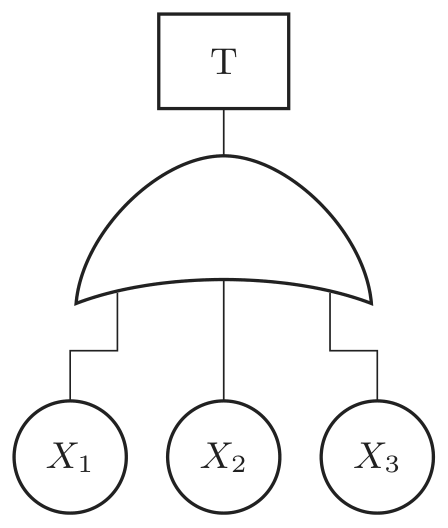

2021년 1회 · 산업안전기사 필기 CBT 기출 재배열 전사 검수본
지면(PDF)과 대조 검수용 · 수식은 KaTeX 렌더 · 총 문항
제1과목 안전관리론
001빈출도 ★☆☆난이도 1·쉬움개념형safe_A_2021_01_001
다음 중 안전교육의 단계에 있어 올바른 행동의 습관화 및 가치관을 형성하도록 하는 교육은?
① 안전의식 교육
② 안전태도 교육
③ 안전지식 교육
④ 안전기능 교육
정답: 2
해설
태도교육이다. 몸에 밴 습관과 가치관을 만드는 마지막 단계다.
안전보건교육의 3단계
| 단계 | | |
|---|
| 1단계 | 지식교육 | 법규와 기준을 알린다 · 강의식 |
| 2단계 | 기능교육 | 시범을 보이고 해 보게 한다 · 되풀이 |
| 3단계 | 태도교육 | 올바른 행동의 습관화와 가치관 형성 · 토의식 · 모범을 보인다 |
오답 분석
① 「안전의식 교육」이라는 단계는 없다.
③ 안전지식 교육은 1단계다.
④ 안전기능 교육은 2단계다.
관련 개념 · 암기
안전교육의 단계「알고(지식) → 할 줄 알고(기능) → 늘 그렇게 한다(태도)」 세 걸음이다 —
「습관화 · 가치관」이라는 낱말이 곧 태도교육이다.
◈ 암기 습관화와 가치관은 태도교육.
🃏 관련 암기카드
분류: 안전보건교육 > 학습이론 > 안전교육의 3단계 · 원본 2011.08.21
002빈출도 ★☆☆난이도 1·쉬움개념형safe_A_2021_01_002
다음 중 재해의 발생 원인에 있어 관리적 원인에 해당하지 않는 것은?
① 안전수칙의 미제정
② 작업량 과다
③ 정리정돈 미실시
④ 사용설비의 설계불량
정답: 4
해설
설비의 설계불량은 기술적 원인이다.
재해의 간접원인
| 구분 | 내용 | |
|---|
| 기술적 원인 | 건물·기계장치의 설계불량 · 구조·재료의 부적합 · 생산공정의 부적당 · 점검과 정비 불량 | ④ |
| 교육적 원인 | 안전지식 부족 · 안전수칙 오해 · 경험 부족 · 훈련 미숙 | |
| 관리적(작업관리상) 원인 | 안전관리조직 결함 · 안전수칙 미제정 · 작업준비 불충분 · 인원배치 부적당 · 작업지시 부적당 · 작업량 과다 · 정리정돈 미실시 | ①②③ |
오답 분석
① 안전수칙의 미제정은 관리적 원인이다.
② 작업량 과다도 그렇다.
③ 정리정돈 미실시도 그렇다.
관련 개념 · 암기
재해의 간접원인「물건을 어떻게 만들었나」는 기술적, 「일을 어떻게 시켰나」는 관리적이다.
「설계」라는 낱말이 곧 기술적을 가리킨다.
◈ 암기 설계불량은 기술적 원인.
🃏 관련 암기카드
분류: — > — > 재해의 원인 · 원본 2011.08.21
003빈출도 ★☆☆난이도 2·보통개념형safe_A_2021_01_003
다음 중 Off.J.T(Off Job Training) 교육방법의 장점으로 옳은 것은?
① 개개인에게 적절한 지도훈련이 가능하다.
② 훈련에 필요한 업무의 계속성이 끊어지지 않는다.
③ 다수의 대상자를 일괄적, 조직적으로 교육할 수 있다.
④ 효과가 곧 업무에 나타나며, 훈련의 좋고 나쁨에 따라 개선이 용이하다.
정답: 3
해설
여럿을 한꺼번에 조직적으로 가르칠 수 있는 것이 Off JT의 장점이다. 나머지 셋은 OJT다.
OJT와 Off JT
| OJT | Off JT |
|---|
| 어디서 | 일하는 자리에서 | 따로 자리를 마련해 |
| 몇 명 | 한 사람 또는 소수 | 여럿을 한꺼번에 |
| 장점 | 개별 지도 · 업무의 계속성이 유지된다 · 효과가 곧 업무에 나타난다 | 조직적·체계적 · 전문 강사 · 훈련에만 전념 · 다른 직장과의 교류 |
오답 분석
① 개개인에 맞춘 지도훈련은 OJT의 장점이다.
② 업무의 계속성이 끊어지지 않는 것도 그렇다.
④ 효과가 곧 업무에 나타나는 것도 그렇다.
관련 개념 · 암기
OJT와 Off JT「다수 · 일괄 · 조직적 · 체계적 · 전문 강사」라는 낱말이 나오면 Off JT다 —
나머지는 모두 「우리 현장, 나 한 사람」이라 OJT다.
◈ 암기 다수를 일괄 교육하면 Off JT.
🃏 관련 암기카드
분류: 안전보건교육 > 교육 이론 > OJT 와 Off JT · 원본 2011.08.21
004빈출도 ★☆☆난이도 1·쉬움개념형safe_A_2021_01_004
산업안전보건법에 따른 사업 내 안전ㆍ보건교육에서 관리 감독자의 정기안전ㆍ보건교육의 내용에 해당하지 않는 것은?
① 유해ㆍ위험 작업환경 관리에 관한 사항
② 표준안전작업방법 및 지도 요령에 관한 사항
③ 정리정돈 및 청소에 관한 사항
④ 작업공정의 유해ㆍ위험과 재해 예방대책에 관한 사항
정답: 3
해설
정리정돈 및 청소는 채용 시·작업내용 변경 시 교육 내용이다.
관리감독자 정기교육의 내용
| 내용 | |
|---|
| 작업공정의 유해·위험과 재해 예방대책에 관한 사항 | |
| 표준안전작업방법 및 지도 요령에 관한 사항 | |
| 유해·위험 작업환경 관리에 관한 사항 | |
| 산업안전보건법령 및 산업재해보상보험 제도에 관한 사항 | |
| 직무스트레스 예방과 관리에 관한 사항 | |
| 위험성평가에 관한 사항 | |
| 정리정돈 및 청소에 관한 사항 | 채용 시·작업내용 변경 시 교육 |
오답 분석
① 유해·위험 작업환경 관리는 관리감독자 정기교육 내용이다.
② 표준안전작업방법 및 지도 요령도 그렇다.
④ 작업공정의 유해·위험과 재해 예방대책도 그렇다.
관련 개념 · 암기
사업 내 안전보건교육의 내용관리감독자 교육은 「관리하는 사람이 알아야 할 것」이라
공정 · 지도 요령 · 작업환경 관리 · 법령이 들어간다.
「정리정돈 · 청소」처럼 손발을 움직이는 항목은 채용 시 교육이다.
◈ 암기 정리정돈·청소는 채용 시 교육.
🃏 관련 암기카드
분류: 안전보건관리 체제 > 선임·자격 > 관리감독자 정기교육 · 원본 2011.06.12
005빈출도 ★☆☆난이도 2·보통개념형safe_A_2021_01_005
다음 중 무재해운동 관련 규정에 따라 무재해로 분류되는 경우가 아닌 것은?
① 출ㆍ퇴근 도중에 발생한 재해
② 제3자의 행위에 의한 업무상 재해
③ 운동경기 등 각종 행사 중 발생한 재해
④ 작업종료후의 정리정돈 과정에서 발생한 재해
정답: 4
해설
정리정돈도 업무의 하나다. 그 과정에서 난 재해는 무재해로 보지 않는다.
무재해로 보는 것과 보지 않는 것
| 무재해로 보는 것 | 출퇴근 도중의 재해 | |
| 제3자의 행위에 의한 업무상 재해 | |
| 운동경기 등 각종 행사 중의 재해 | |
| 천재지변·돌발사고로 인한 구조행위나 긴급피난 중의 사고 | |
| 무재해로 보지 않는 것 | 작업 종료 뒤 정리정돈 중의 재해 | 업무의 연장 · 이 문항 |
| 업무에 기인한 4일 이상의 요양을 요하는 재해 | |
오답 분석
① 출퇴근 도중의 재해는 무재해로 본다.
② 제3자의 행위에 의한 업무상 재해도 그렇다.
③ 운동경기 등 행사 중의 재해도 그렇다.
관련 개념 · 암기
무재해운동의 무재해 판정「업무에 기인했는가」가 갈림선이다 —
정리정돈은 작업이 끝난 뒤라도 업무의 마무리라 그대로 재해로 센다.
나머지 셋은 업무와 거리가 있거나 남을 돕다 난 것이다.
◈ 암기 정리정돈 중의 재해는 무재해가 아니다.
🃏 관련 암기카드
분류: 무재해운동 > 무재해·위험예지 > 무재해운동 · 원본 2011.08.21
006빈출도 ★☆☆난이도 2·보통개념형safe_A_2021_01_006
다음 중 방독마스크의 성능기준에 있어 사용 장소에 따른 등급의 설명으로 틀린 것은?
① 고농도는 가스 또는 증기의 농도가 100분의 2 이하의 대기 중에서 사용하는 것을 말한다.
② 중농도는 가스 또는 증기의 농도가 100분의 1 이하의 대기 중에서 사용하는 것을 말한다.
③ 저농도는 가스 또는 증기의 농도가 100분의 0.5 이하의 대기 중에서 사용하는 것으로서 긴급용이 아닌 것을 말한다.
④ 고농도와 중농도에서 사용하는 방독마스크는 전면형(격리식, 직결식)을 사용해야 한다.
정답: 3
해설
저농도는 100분의 0.1 이하다. 「0.5」가 아니다.
방독마스크의 사용장소별 등급
| 등급 | 가스·증기 농도 | |
|---|
| 고농도 | 100분의 2(2%) 이하 | 전면형(격리식·직결식) |
| 중농도 | 100분의 1(1%) 이하 | 전면형 또는 반면형 |
| 저농도 및 최저농도 | 100분의 0.1(0.1%) 이하 | 「0.5」가 아니다 · 긴급용이 아닌 것 |
| 암모니아 | 100분의 3 이하 | 고농도 |
오답 분석
① 고농도가 100분의 2 이하인 것은 맞다.
② 중농도가 100분의 1 이하인 것도 맞다.
④ 고농도와 중농도에서 전면형을 쓰는 것도 맞다.
관련 개념 · 암기
방독마스크의 등급「2 · 1 · 0.1」 세 값이다 —
저농도만 자릿수가 한 칸 내려간다.
0.5로 바꿔 놓으면 등급 사이가 고르게 보여 그럴듯하다.
◈ 암기 저농도는 100분의 0.1 이하.
🃏 관련 암기카드
분류: 보호구 > 호흡·눈·귀 > 방독마스크 · 원본 2014.08.17
007빈출도 ★☆☆난이도 1·쉬움개념형safe_A_2021_01_007
다음 중 상황성 누발자의 재해유발원인에 해당하는 것은?
① 주의력 산만
② 저지능
③ 설비의 결함
④ 도덕성 결여
정답: 3
해설
설비의 결함이다. 그 사람이 아니라 둘레의 상황이 나쁜 것이다.
재해 누발자의 유형
| 유형 | 원인 | |
|---|
| 미숙성 누발자 | 기능이 미숙하고 환경에 익숙하지 않다 | 새로 온 사람 |
| 상황성 누발자 | 작업이 어렵다 · 기계설비의 결함 · 환경상 주의력 집중이 어렵다 · 심신에 근심이 있다 | 상황이 나쁘다 · 이 문항 |
| 습관성 누발자 | 재해 경험으로 신경과민이 되었다 | 슬럼프 |
| 소질성 누발자 | 주의력 산만 · 저지능 · 도덕성 결여 · 흥분성 | 타고난 성질 |
오답 분석
① 주의력 산만은 소질성 누발자의 원인이다.
② 저지능도 그렇다.
④ 도덕성 결여도 그렇다.
관련 개념 · 암기
재해 누발자의 유형「상황성」은 밖의 조건, 「소질성」은 그 사람의 성질이다 —
보기 셋이 모두 사람의 성질이고 하나만 설비의 이야기다.
◈ 암기 설비의 결함은 상황성 누발자.
🃏 관련 암기카드
분류: 산업심리 > 적성·검사 > 재해 누발자 · 원본 2012.08.26
008빈출도 ★☆☆난이도 1·쉬움개념형safe_A_2021_01_008
다음 중 한번 학습한 결과가 다른 학습이나 반응에 영향을 주는 것으로 특히 학습효과를 설명할 때 많이 쓰이는 용어는?
① 학습의 연습
② 학습곡선
③ 학습의 전이
④ 망각곡선
정답: 3
해설
학습의 전이(transfer)다. 먼저 배운 것이 뒤에 배우는 것에 영향을 준다.
학습에 관한 용어
| 용어 | 무엇 | |
|---|
| 학습의 전이 | 먼저 배운 것이 뒤의 학습이나 반응에 영향을 준다 | 긍정적 전이 · 부정적 전이 · 이 문항 |
| 학습곡선 | 연습 횟수에 따른 성취의 변화 | |
| 망각곡선 | 시간이 지남에 따라 잊는 정도 | 에빙하우스 |
| 학습의 연습 | 되풀이해 익히는 것 | |
오답 분석
① 학습의 연습은 되풀이해 익히는 것이다.
② 학습곡선은 연습 횟수에 따른 성취의 변화다.
④ 망각곡선은 시간에 따라 잊는 정도를 나타낸다.
관련 개념 · 암기
학습의 전이「전이(轉移)」는 옮겨 간다는 뜻이다 —
앞의 학습이 뒤를 돕기도(긍정적) 방해하기도(부정적) 한다.
안전교육에서 「옛 습관」이 새 방법을 방해하는 것이 부정적 전이다.
◈ 암기 앞의 학습이 뒤에 영향을 주면 전이.
🃏 관련 암기카드
분류: 산업심리 > 부주의·착오 > 학습의 전이 · 원본 2012.05.20
009빈출도 ★☆☆난이도 2·보통개념형safe_A_2021_01_009
리더십 이론 중 관리 그리드 이론에 있어 대표적인 유형의 설명이 잘못 연결된 것은?
① (1.1) : 무관심형
② (3.3) : 타협형
③ (9.1) : 과업형
④ (1.9) : 인기형
정답: 2
해설
타협형은 (5,5)다. 「(3,3)」이 아니다.
관리그리드의 다섯 유형
| 좌표 | 유형 | |
|---|
| (1, 1) | 무관심형 | 생산에도 사람에도 관심이 없다 |
| (1, 9) | 인기형(컨트리클럽형) | 사람에만 관심 |
| (9, 1) | 과업형 | 생산에만 관심 |
| (5, 5) | 타협형(중도형) | 「(3,3)」이 아니다 |
| (9, 9) | 이상형(팀형) | 가장 바람직하다 |
| 읽는 법 | 앞이 생산(과업)에 대한 관심, 뒤가 인간에 대한 관심 | |
오답 분석
① (1,1) 무관심형은 맞다.
③ (9,1) 과업형도 맞다.
④ (1,9) 인기형도 맞다.
관련 개념 · 암기
관리그리드 이론격자가 1 ~ 9이므로 한가운데는 5다 —
(3,3)은 가운데가 아니다.
(9,9) 이상형이 가장 바람직 하다는 것도 함께 잡아 둔다.
◈ 암기 타협형은 (5,5).
🃏 관련 암기카드
분류: 산업심리 > 집단·리더십 > 관리그리드 · 원본 2012.05.20
010빈출도 ★★☆난이도 2·보통개념형safe_A_2021_01_010
다음 중 무재해운동 추진의 3요소에 관한 설명과 가장 거리가 먼 것은?
① 모든 재해는 잠재요인을 사전에 발견ㆍ파악ㆍ해결함으로써 근원적으로 산업재해를 없애야 한다.
② 안전보건은 최고경영자의 무재해 및 무질병에 대한 확고한 경영자세로 시작된다.
③ 안전보건을 추진하는 데에는 관리감독자들의 생산 활동 속에 안전보건을 실천하는 것이 중요하다.
④ 안전보건은 각자 자신의 문제이며, 동시에 동료의 문제로서 직장의 팀 멤버와 협동 노력하여 자주적으로 추진하는 것이 필요하다.
정답: 1
해설
①은 「무의 원칙」으로 기본이념 3원칙에 드는 말이다. 추진의 3요소가 아니다.
무재해운동의 3기둥(3요소)과 3원칙
| 추진의 3기둥 | 기본이념 3원칙 |
|---|
| 내용 | 최고경영층의 엄격한 안전방침과 자세 | 무의 원칙 |
| 관리감독자에 의한 안전보건의 라인화 | 참가의 원칙 |
| 직장 자주활동의 활성화 | 선취의 원칙 |
| 성격 | 누가 어떻게 밀고 나가나 | 무엇을 지향하나 |
오답 분석
② 최고경영자의 경영자세는 3기둥의 하나다.
③ 관리감독자의 라인화도 그렇다.
④ 직장 자주활동의 활성화도 그렇다.
관련 개념 · 암기
무재해운동의 3기둥과 3원칙3기둥은 「위 · 가운데 · 아래」 세 층이 하나씩 맡는 것이고
3원칙은 「없애고 · 함께하고 · 미리 한다」는 이념이다.
①은 이념 쪽이다.
◈ 암기 3기둥은 경영층·라인화·자주활동.
🃏 관련 암기카드
분류: 안전보건관리 체제 > 선임·자격 > 무재해운동의 3기둥 · 원본 2011.03.20 · 2013.06.02
011빈출도 ★☆☆난이도 2·보통개념형safe_A_2021_01_011
다음 중 산업안전보건법상 「중대재해」에 속하지 않는 것은?
① 1명의 사망자가 발생한 재해
② 1개월의 요양을 요하는 부상자가 5명 발생한 재해
③ 3개월의 요양을 요하는 부상자가 동시에 3명 발생한 재해
④ 10명의 직업성질병자가 동시에 발생한 재해
정답: 2
해설
3개월 이상의 요양이라야 한다. 「1개월」은 기간이 못 미친다.
중대재해의 세 가지
| 중대재해 | |
|---|
| 사망자가 1명 이상 발생한 재해 | ① |
| 3개월 이상의 요양이 필요한 부상자가 동시에 2명 이상 발생한 재해 | ③ · 「1개월」은 아니다 |
| 부상자 또는 직업성 질병자가 동시에 10명 이상 발생한 재해 | ④ |
| 보고 | 지체 없이 관할 지방고용노동관서의 장에게 전화·팩스 등으로 |
오답 분석
① 사망자 1명이 발생한 재해는 중대재해다.
③ 3개월 요양 부상자 3명은 중대재해다.
④ 직업성 질병자 10명도 중대재해다.
관련 개념 · 암기
중대재해의 범위「사망 1 · 3개월 2 · 10명」 세 가지다 —
요양 기간은 3개월, 사람 수는 2명이라는 짝을 기억하면 「1개월 5명」이 어긋난 것이 보인다.
◈ 암기 사망 1명, 3개월 요양 2명, 부상·질병 10명.
🃏 관련 암기카드
분류: 안전보건관리 체제 > 도급·중대재해 > 중대재해 · 원본 2011.06.12
012빈출도 ★☆☆난이도 2·보통개념형safe_A_2021_01_012
다음 중 위험예지훈련에 있어 Touch and call에 관한 설명으로 가장 적절한 것은?
① 현장에서 팀 전원이 각자의 왼손을 맞잡아 원을 만들어 팀 행동목표를 지적확인하는 것을 말한다.
② 현장에서 그때 그 장소의 상황에서 즉응하여 실시하는 위험예지활동으로 즉시즉응법이라고도 한다.
③ 작업자가 위험작업에 임하여 무재해를 지향하겠다는 뜻을 큰소리로 호칭하면서 안전의식수준을 제고하는 기법이다.
④ 한 사람 한 사람의 위험에 대한 감수성 향상을 도모하기 위한 삼각 및 원포인트 위험예지훈련을 통합한 활용기법이다.
정답: 1
해설
손을 맞잡아 원을 만들고 팀 행동목표를 함께 외치는 것이다.
무재해운동의 실천기법
| 기법 | 무엇 | |
|---|
| 터치 앤 콜 | 전원이 왼손을 맞잡아 원을 만들고 팀 행동목표를 지적확인 | 스킨십으로 일체감을 · 이 문항 |
| TBM 위험예지훈련 | 그 자리 그 상황에서 즉응 | 즉시즉응법 |
| 무재해 소집단 활동 | 큰소리로 호칭해 안전의식을 높인다 | |
| 1인 위험예지훈련 | 삼각 · 원포인트 위험예지훈련 | 감수성 향상 |
오답 분석
② 그 자리에서 즉응하는 것은 TBM 위험예지훈련이다.
③ 큰소리로 호칭해 의식수준을 높이는 것은 무재해 소집단 활동이다.
④ 삼각·원포인트를 통합한 것은 1인 위험예지훈련이다.
관련 개념 · 암기
터치 앤 콜(touch and call)「터치(손을 맞대고) 앤 콜(함께 외친다)」이라는 이름이 그대로 방법이다 —
손을 맞잡는 스킨십이 팀의 일체감을 만든다.
◈ 암기 손을 맞잡고 함께 외치면 터치 앤 콜.
🃏 관련 암기카드
분류: 안전보건교육 > 교육계획·평가 > 터치 앤 콜 · 원본 2012.03.04
013빈출도 ★☆☆난이도 2·보통개념형safe_A_2021_01_013
다음 중 학습을 자극(Stimulus)에 의한 반응(Response)으로 보는 이론에 해당하는 것은?
① 장설(Field Theory)
② 통찰설(Insight Theory)
③ 기호형태설(Sign-gestalt Theory)
④ 시행착오설(Trial and Error Theory)
정답: 4
해설
시행착오설이 자극-반응(S-R) 이론이다.
학습이론의 두 갈래
| 갈래 | 이론 | |
|---|
| S-R 이론(자극-반응) | 시행착오설(손다이크) · 조건반사설(파블로프) · 조작적 조건화설(스키너) | 행동주의 · 이 문항 |
| 인지 이론(형태설) | 통찰설(쾰러) · 장설(레빈) · 기호형태설(톨만) | 인지주의 |
| 차이 | S-R은 「반복으로 굳는다」, 인지는 「전체를 깨닫는다」 | |
오답 분석
① 장설은 레빈의 인지 이론이다.
② 통찰설은 쾰러의 인지 이론이다.
③ 기호형태설은 톨만의 인지 이론이다.
관련 개념 · 암기
학습이론「자극에 반응이 붙는다」는 것이 S-R 이론이고
「전체를 깨닫는다」는 것이 형태설이다.
보기 셋이 형태설이라 하나만 남는다.
◈ 암기 시행착오설은 S-R 이론.
🃏 관련 암기카드
분류: 안전보건교육 > 학습이론 > 학습이론 · 원본 2011.08.21
014빈출도 ★☆☆난이도 1·쉬움개념형safe_A_2021_01_014
다음 중 학습에 대한 동기유발 방법 가운데 외적동기 유발방법이 아닌 것은?
① 경쟁심을 일으키도록 한다.
② 학습의 결과를 알려 준다.
③ 학습자의 요구 수준에 맞는 교재를 제시한다.
④ 적절한 상벌에 의한 학습의욕을 환기시킨다.
정답: 3
해설
학습자의 요구 수준에 맞는 교재를 주는 것은 내적 동기유발이다.
동기유발의 두 갈래
| 갈래 | 방법 | |
|---|
| 외적 동기유발 | 경쟁심을 일으킨다 · 학습결과를 알려 준다 · 적절한 상벌을 준다 | 밖에서 주는 자극 |
| 내적 동기유발 | 학습자의 요구 수준에 맞는 교재를 준다 · 학습목표를 뚜렷이 알게 한다 · 학습의 결과가 자기에게 어떤 뜻인지 알게 한다 | 스스로 하고 싶게 |
오답 분석
① 경쟁심을 일으키는 것은 외적 동기유발이다.
② 학습의 결과를 알려 주는 것도 그렇다.
④ 적절한 상벌로 학습의욕을 환기하는 것도 그렇다.
관련 개념 · 암기
동기유발의 방법「남과 견주고 · 알려 주고 · 상벌을 주는」 것은 밖에서 주는 자극이다 —
「그 사람에게 맞춰 준다」는 것만 학습자 안쪽을 겨눈다.
◈ 암기 요구 수준에 맞춘 교재는 내적 동기유발.
🃏 관련 암기카드
분류: 안전보건교육 > 학습이론 > 동기유발 · 원본 2011.08.21
015빈출도 ★☆☆난이도 1·쉬움개념형safe_A_2021_01_015
안전교육방법 중 학습자가 자신의 학습속도에 적합하도록 프로그램 자료를 가지고 단독으로 학습하도록 하는 교육 방법은?
① 실연법
② 모의법
③ 토의법
④ 프로그램 학습법
정답: 4
해설
프로그램 학습법이다. 제 속도로 혼자 밟아 나간다.
교육방법의 갈래
| 방법 | 무엇 | |
|---|
| 프로그램 학습법 | 작게 나눈 단계를 제 속도로 혼자 밟아 나간다 | 개인차를 살린다 · 이 문항 |
| 실연법 | 배운 것을 실제로 해 보게 한다 | |
| 모의법 | 실제와 비슷한 상황을 만들어 놓고 | 시뮬레이션 |
| 토의법 | 여럿이 이야기를 주고받으며 | 태도교육에 알맞다 |
오답 분석
① 실연법은 배운 것을 실제로 해 보게 하는 방법이다.
② 모의법은 실제와 비슷한 상황을 만들어 하는 방법이다.
③ 토의법은 여럿이 이야기를 주고받는 방법이다.
관련 개념 · 암기
프로그램 학습법「자신의 학습속도」와 「단독」 두 낱말이 곧 프로그램 학습법이다 —
나머지 셋은 모두 교사나 다른 사람이 있어야 한다.
◈ 암기 제 속도로 혼자 하면 프로그램 학습법.
🃏 관련 암기카드
분류: 안전보건교육 > 학습이론 > 교육방법 · 원본 2011.08.21
016빈출도 ★☆☆난이도 2·보통개념형safe_A_2021_01_016
다음 중 정기점검에 관한 설명으로 가장 적합한 것은?
① 안전강조 기간, 방화점검 기간에 실시하는 점검
② 사고 발생 이후 곧바로 외부 전문가에 의하여 실시하는 점검
③ 작업자에 의해 매일 작업 전, 중, 후에 해당 작업설비에 대하여 수시로 실시하는 점검
④ 기계, 기구, 시설 등에 대하여 주, 월, 또는 분기 등 지정된 날짜에 실시하는 점검
정답: 4
해설
정해진 날짜에 주기적으로 하는 것이 정기점검이다.
안전점검의 종류
| 종류 | 언제 | |
|---|
| 일상(수시)점검 | 작업 전·중·후에 수시로 | ③ · 작업자 스스로 |
| 정기점검 | 주 · 월 · 분기 등 정해진 날짜에 | ④ — 이 문항 · 법정 점검 |
| 특별점검 | 기계·설비를 새로 들이거나 고친 뒤, 천재지변 뒤 | ①의 안전강조기간 점검도 여기 |
| 임시점검 | 이상이 있을 때 그때그때 | ② |
오답 분석
① 안전강조기간이나 방화점검 기간에 하는 것은 특별점검이다.
② 사고 발생 뒤 곧바로 하는 것은 임시점검이다.
③ 작업 전·중·후에 수시로 하는 것은 일상점검이다.
관련 개념 · 암기
안전점검의 종류네 갈래가 「늘(일상) · 주기적으로(정기) · 일이 있을 때(특별) · 갑자기(임시)」다 —
네 보기가 그 넷에 하나씩 놓여 있다.
◈ 암기 정해진 날짜에 하면 정기점검.
🃏 관련 암기카드
분류: 안전점검·인증 > 안전점검 > 안전점검의 종류 · 원본 2014.05.25
017빈출도 ★☆☆난이도 3·어려움계산형safe_A_2021_01_017
A 사업장의 연천인율이 10.8 인 경우 이 사업장의 도수율은 약 얼마인가?
정답: 2
해설
$\text{도수율} = \dfrac{\text{연천인율}}{2.4} = \dfrac{10.8}{2.4} = 4.5$다.
연천인율과 도수율
| 식 | |
|---|
| 연천인율 | $\dfrac{\text{연간 재해자수}}{\text{연평균 근로자수}} \times 1 {,} 000$ | |
| 도수율 | $\dfrac{\text{재해건수}}{\text{연근로시간수}} \times 10^{6}$ | |
| 관계 | 연천인율 = 도수율 × 2.4 | 1인이 연 2,400시간 근무한다고 볼 때 |
| 이 문항 | 10.8 ÷ 2.4 = 4.5 | |
오답 분석
① 5.4는 2로 나눈 값이다.
③ 3.7은 계산과 맞지 않는다.
④ 1.8 도 그렇다.
관련 개념 · 암기
연천인율과 도수율2.4라는 수는 「1인 연간 2,400시간」에서 나온다 —
연천인율이 도수율보다 크므로 나눈다.
반대로 도수율에서 연천인율을 구하면 곱한다.
◈ 암기 연천인율 = 도수율 × 2.4.
🃏 관련 암기카드
분류: 재해조사 및 분석 > 재해율 계산 > 재해율 · 원본 2016.05.08
018빈출도 ★☆☆난이도 1·쉬움개념형safe_A_2021_01_018
다음 중 산업안전보건법에 따라 환기가 극히 불량한 좁은 밀폐된 장소에서 용접작업을 하는 근로자를 대상으로 한 특별 안전ㆍ보건교육내용에 해당하지 않는 것은? (단, 일반적인 안전ㆍ보건에 필요한 사항은 제외한다.)
① 환기설비에 관한 사항
② 질식시 응급조치에 관한 사항
③ 작업순서, 안전작업방법 및 수칙에 관한 사항
④ 폭발 한계점, 발화점 및 인화점 등에 관한 사항
정답: 4
해설
폭발 한계점 · 발화점 · 인화점은 인화성 액체나 가스를 다루는 작업의 특별교육 내용이다.
밀폐장소 용접작업의 특별교육 내용
| 내용 | |
|---|
| 작업순서, 안전작업방법 및 수칙에 관한 사항 | |
| 환기설비에 관한 사항 | |
| 전격 방지 및 보호구 착용에 관한 사항 | |
| 질식 시 응급조치에 관한 사항 | |
| 작업환경 점검에 관한 사항 | |
| 폭발 한계점·발화점·인화점 | 인화성 물질 취급작업의 특별교육 내용 |
오답 분석
① 환기설비에 관한 사항은 밀폐장소 용접작업의 특별교육 내용이다.
② 질식 시 응급조치에 관한 사항도 그렇다.
③ 작업순서, 안전작업방법 및 수칙도 그렇다.
관련 개념 · 암기
특별안전보건교육의 내용밀폐장소 용접의 위험은 「숨을 못 쉬는 것」과 「감전」이다 —
환기 · 질식 · 전격이 그래서 들어간다.
「폭발 한계점 · 발화점」은 화학물질 쪽의 낱말이다.
◈ 암기 폭발범위·발화점은 인화성 물질 교육.
🃏 관련 암기카드
분류: 재해조사 및 분석 > 상해 분류 > 특별안전보건교육 · 원본 2011.08.21
019빈출도 ★☆☆난이도 3·어려움계산형safe_A_2021_01_019
A사업장의 2019년 도수율이 10이라 할 때 연천인율은 얼마인가?
정답: 4
해설
$\text{연천인율} = \text{도수율} \times 2.4 = 10 \times 2.4 = 24$다.
연천인율과 도수율
| 식 | |
|---|
| 연천인율 → 도수율 | ÷ 2.4 | |
| 도수율 → 연천인율 | × 2.4 | 이 문항 |
| 2.4의 뿌리 | $\dfrac{1 {,} 000}{10^{6}} \times 2 {,} 400 = 2.4$ | 1인 연간 2,400시간 |
| 결과 | 10 × 2.4 = 24 | |
오답 분석
① 2.4는 배수 자체다.
② 5는 계산과 맞지 않는다.
③ 12 도 그렇다.
관련 개념 · 암기
연천인율과 도수율연천인율이 도수율보다 크다는 것만 기억하면 방향을 헷갈리지 않는다 —
1,000명당 사람 수와 100만 시간당 건수를 견주면 앞의 값이 더 크게 나온다.
◈ 암기 연천인율 = 도수율 × 2.4.
🃏 관련 암기카드
⚠ 그림 보강 필요
분류: 재해조사 및 분석 > 재해율 계산 > 재해율 · 원본 2020.06.06
020빈출도 ★★☆난이도 1·쉬움개념형safe_A_2021_01_020
재해예방의 4원칙에 해당하지 않는 것은?
① 예방가능의 원칙
② 손실우연의 원칙
③ 원인연계의 원칙
④ 재해 연쇄성의 원칙
정답: 4
해설
넷은 예방가능 · 손실우연 · 원인계기(연계) · 대책선정이다. 「재해 연쇄성의 원칙」은 없다.
재해예방의 4원칙
| 원칙 | | |
|---|
| 예방가능의 원칙 | 천재지변을 뺀 재해는 모두 막을 수 있다 | |
| 손실우연의 원칙 | 사고와 손실의 크기는 우연히 정해진다 | |
| 원인계기(연계)의 원칙 | 재해에는 반드시 원인이 있다 | |
| 대책선정의 원칙 | 원인이 있으면 반드시 대책도 있다 | 3E |
| 재해 연쇄성 | 하인리히의 도미노 이론 | 4원칙이 아니다 |
오답 분석
① 예방가능의 원칙은 4원칙의 하나다.
② 손실우연의 원칙도 그렇다.
③ 원인연계의 원칙도 그렇다.
관련 개념 · 암기
재해예방의 4원칙「손실은 우연 · 원인은 필연 · 예방은 가능 · 대책은 있다」 네 마디다 —
「연쇄성」은 도미노 이론의 이야기라 4원칙에 들지 않는다.
◈ 암기 손실우연 · 원인계기 · 예방가능 · 대책선정.
🃏 관련 암기카드
⚠ 점검 요망: 오염 문항과 이웃함
분류: 재해조사 및 분석 > 재해 발생 이론 > 재해예방의 4원칙 · 원본 2020.06.06 · 2022.03.05
제2과목 인간공학 및 시스템안전공학
021빈출도 ★☆☆난이도 3·어려움계산형safe_A_2021_01_021
그림과 같은 FT도에서 정상사상 T의 발생 확률은? (단, X1, X2, X3의 발생 확률은 각각 0.1, 0.15, 0.1이다.)

① 0.3115
② 0.35
③ 0.496
④ 0.9985
정답: 1
해설
정상사상 T가 OR 게이트이므로 여사건(일어나지 않을 확률)을 곱해 구한다.$P ( T ) = 1 - ( 1 - 0.1 ) ( 1 - 0.15 ) ( 1 - 0.1 ) = 1 - 0.9 \times 0.85 \times 0.9 = 1 - 0.6885 = 0.3115$
게이트별 확률 계산
| 게이트 | 식 | |
|---|
| AND | $P = P_{1} \times P_{2} \times \cdots$ | 모두 일어나야 |
| OR | $P = 1 - ( 1 - P_{1} ) ( 1 - P_{2} ) \cdots$ | 하나만 일어나도 · 이 문항 |
| 이 문항 | $1 - 0.9 \times 0.85 \times 0.9 = 0.3115$ | |
오답 분석
② 0.35는 세 확률을 그냥 더한 값에 가깝다.
③ 0.496은 계산과 맞지 않는다.
④ 0.9985는 여사건을 반대로 잡은 값이다.
관련 개념 · 암기
FT도의 정상사상 발생확률OR는 「곱해서 1에서 뺀다」, AND는 「그냥 곱한다」 두 가지뿐이다 —
확률이 작을 때 OR는 대략 합에 가깝고 AND는 훨씬 작아진다는 것으로 검산한다.
◈ 암기 OR는 1 − 여사건의 곱.
🃏 관련 암기카드
⚠ 점검 요망: 지문과 선택지 사이에 페이지가 바뀜 | 교차 오염 의심
분류: 결함수분석 > FTA 기호·구조 > FT도의 확률 계산 · 원본 2021.03.07
022빈출도 ★☆☆난이도 2·보통개념형safe_A_2021_01_022
설비의 고장과 같이 발생확률이 낮은 사건의 특정시간 또는 구간에서의 발생횟수를 측정하는 데 가장 적합한 확률분포는?
① 이항분포(Binomial distribution)
② 푸아송분포(Poisson distribution)
③ 와이블분포(Weibull distribution)
④ 지수분포(Exponential distribution)
정답: 2
해설
푸아송분포다. 드물게 일어나는 일이 정해진 시간·구간에 몇 번 일어나는지를 다룬다.
신뢰성에 쓰이는 확률분포
| 분포 | 무엇을 다루나 | |
|---|
| 푸아송분포 | 드문 사건의 단위 시간·구간당 발생 횟수 | 이 문항 |
| 이항분포 | 성공·실패 두 갈래를 n 번 되풀이할 때의 성공 횟수 | |
| 지수분포 | 고장률이 일정할 때의 고장까지의 시간 | 우발고장기간 |
| 와이블분포 | 고장률이 시간에 따라 바뀔 때 | 초기·마모고장까지 함께 |
오답 분석
① 이항분포는 두 갈래 시행을 n 번 할 때의 성공 횟수를 다룬다.
③ 와이블분포는 고장률이 시간에 따라 바뀔 때 쓴다.
④ 지수분포는 고장까지의 시간을 다룬다.
관련 개념 · 암기
푸아송분포「횟수」를 묻는가 「시간」을 묻는가로 갈린다 —
푸아송·이항은 횟수, 지수·와이블은 시간이다.
「발생확률이 낮다」는 단서가 곧 푸아송이다.
◈ 암기 드문 사건의 발생 횟수는 푸아송분포.
🃏 관련 암기카드
⚠ 점검 요망: 오염 문항과 이웃함
분류: 결함수분석 > 컷셋·확률 > 확률분포 · 원본 2020.08.22
023빈출도 ★☆☆난이도 1·쉬움개념형safe_A_2021_01_023
휴먼 에러(Human Error)의 요인을 심리적 요인과 물리적 요인으로 구분할 때, 심리적 요인에 해당하는 것은?
① 일이 너무 복잡한 경우
② 일의 생산성이 너무 강조될 경우
③ 동일 형상의 것이 나란히 있을 경우
④ 서두르거나 절박한 상황에 놓여있을 경우
정답: 4
해설
서두르거나 절박한 상황은 그 사람의 마음속에서 일어나는 일이라 심리적 요인이다.
휴먼 에러의 심리적·물리적 요인
| 구분 | 요인 | |
|---|
| 심리적 요인 | 서두르거나 절박한 상황 · 의욕이나 사기가 결여됨 · 주의를 소홀히 함 · 무엇인가에 사로잡힘 · 기억의 실패 | ④ |
| 물리적 요인 | 일이 너무 단조롭거나 너무 복잡함 · 생산성이 지나치게 강조됨 · 동일 형상이 나란히 있음 · 양립성에 맞지 않음 · 재촉받는 작업환경 | ①②③ |
오답 분석
① 일이 너무 복잡한 것은 물리적 요인이다.
② 생산성이 지나치게 강조되는 것도 그렇다.
③ 동일 형상이 나란히 있는 것도 그렇다.
관련 개념 · 암기
휴먼 에러의 요인「일이 어떻게 놓여 있나」가 물리적, 「사람 마음이 어떤가」가 심리적이다 —
보기 셋은 모두 일과 환경의 이야기이고 하나만 사람의 상태를 말한다.
◈ 암기 서두름·절박함은 심리적 요인.
🃏 관련 암기카드
⚠ 점검 요망: 오염 문항과 이웃함
분류: 결함수분석 > FTA 기호·구조 > 휴먼 에러의 요인 · 원본 2020.06.06
024빈출도 ★☆☆난이도 2·보통개념형safe_A_2021_01_024
다음 중 경고등의 점멸 속도로 가장 적합한 것은?
① 3 ~ 10회/초
② 20 ~ 40회/초
③ 40 ~ 60회/초
④ 60 ~ 90회/초
정답: 1
해설
3 ~ 10회/초다. 더 빠르면 켜져 있는 것처럼 보인다.
경고등 설계 기준
| 항목 | 기준 | |
|---|
| 점멸 속도 | 3 ~ 10회/초 | 이 문항 |
| 점멸등의 지속시간 | 0.05초 이상 | |
| 융합 한계 | 약 30회/초를 넘으면 연속광으로 보인다 | 깜빡임이 사라진다 |
| 밝기 | 배경보다 2배 이상 밝게 | |
| 개수 | 경고등은 하나만 쓰는 것이 좋다 | |
오답 분석
② 20 ~ 40회/초는 너무 빨라 깜빡임이 잘 보이지 않는다.
③ 40 ~ 60회/초는 연속광으로 보인다.
④ 60 ~ 90회/초도 그렇다.
관련 개념 · 암기
경고등의 점멸 속도사람 눈은 약 30회/초를 넘으면 깜빡임을 못 느낀다 —
그래서 경고등은 그보다 훨씬 느린 3 ~ 10회/초로 한다.
네 보기 중 가장 느린 것을 고르면 된다.
◈ 암기 경고등은 3 ~ 10회/초.
🃏 관련 암기카드
분류: — > — > 시각적 표시장치 · 원본 2011.08.21
025빈출도 ★☆☆난이도 2·보통개념형safe_A_2021_01_025
위험관리에서 위험의 분석 및 평가에 유의할 사항으로 적절하지 않은 것은?
① 발생의 빈도보다는 손실의 규모에 중점을 둔다.
② 한 가지의 사고가 여러 가지 손실을 수반하는지 확인한다.
③ 기업 간의 의존도는 어느 정도인지 점검한다.
④ 작업표준의 의미를 충분히 이해하고 있는지 점검한다.
정답: 4
해설
작업표준의 이해 여부는 교육과 작업관리의 몫이지 위험의 분석·평가에서 볼 것이 아니다.
위험 분석·평가 시 유의사항
| 유의사항 | |
|---|
| 발생의 빈도보다 손실의 규모에 중점을 둔다 | |
| 한 가지 사고가 여러 손실을 함께 부르는지 확인한다 | |
| 기업 간의 의존도가 어느 정도인지 점검한다 | |
| 작업표준의 이해 여부 | 교육·작업관리의 영역 |
오답 분석
① 손실의 규모에 중점을 두는 것은 유의사항이다.
② 한 사고가 여러 손실을 부르는지 확인하는 것도 그렇다.
③ 기업 간 의존도를 점검하는 것도 그렇다.
관련 개념 · 암기
위험관리의 분석·평가위험관리는 「얼마나 크게 잃을 수 있나」를 본다 —
보기 셋은 모두 손실의 크기와 번짐을 말하고 하나만 사람의 이해도를 말한다.
◈ 암기 작업표준 이해도는 위험 분석·평가 항목이 아니다.
🃏 관련 암기카드
분류: 시스템 위험분석 > 시스템 안전 일반 > 위험관리 · 원본 2011.03.20
026빈출도 ★☆☆난이도 1·쉬움개념형safe_A_2021_01_026
다음 중 인간이 과오를 범하기 쉬운 성격의 상황과 가장 거리가 먼 것은?
① 단독작업
② 공동작업
③ 장시간 감시
④ 다경로 의사결정
정답: 1
해설
단독작업은 오히려 책임이 뚜렷하고 혼선이 없어 과오가 적다.
과오를 범하기 쉬운 상황
| 상황 | 왜 | |
|---|
| 공동작업 | 책임이 흩어지고 신호를 주고받다 어긋난다 | |
| 장시간 감시 | 주의가 흐트러진다 | 경계(vigilance) 저하 |
| 다경로 의사결정 | 고를 길이 많아 헷갈린다 | |
| 단독작업 | 혼선이 없고 책임이 뚜렷하다 | 이 문항 — 거리가 멀다 |
오답 분석
② 공동작업은 책임이 흩어져 과오가 나기 쉽다.
③ 장시간 감시는 주의가 흐트러진다.
④ 다경로 의사결정은 고를 길이 많아 헷갈린다.
관련 개념 · 암기
휴먼에러가 일어나기 쉬운 상황「여럿이 · 오래 · 갈래가 많이」 세 조건이 과오를 부른다 —
단독작업은 그 셋 중 어디에도 들지 않는다.
◈ 암기 단독작업은 과오와 거리가 멀다.
🃏 관련 암기카드
분류: — > — > 휴먼 에러 · 원본 2011.03.20
027빈출도 ★☆☆난이도 1·쉬움개념형safe_A_2021_01_027
작업자가 용이하게 기계ㆍ기구를 식별하도록 암호화(Coding)를 한다. 암호화 방법이 아닌 것은?
정답: 1
해설
강도(세기)는 눈이나 손으로 가려낼 수 있는 표시가 아니다.
조종장치의 암호화 방법
| 방법 | |
|---|
| 형상(모양) 암호화 | 손으로 만져 가려낸다 |
| 크기 암호화 | 1.3cm 이상 지름 차이, 1.3배 이상 두께 차이 |
| 색채 암호화 | 눈으로 가려낸다 |
| 표면 촉감 암호화 | 매끄러움·거칠기 |
| 위치 암호화 · 작동방법 암호화 · 라벨 | |
| 강도 | 암호화 방법이 아니다 |
오답 분석
② 형상은 암호화 방법이다.
③ 크기도 그렇다.
④ 색채도 그렇다.
관련 개념 · 암기
조종장치의 암호화암호화는 「가려낼 수 있게 서로 다르게 만드는 것」이다 —
모양 · 크기 · 색 · 촉감 · 위치처럼 보거나 만져서 구별되는 것이라야 한다.
「강도」는 힘의 세기라 표시가 되지 못한다.
◈ 암기 강도는 암호화 방법이 아니다.
🃏 관련 암기카드
분류: — > — > 조종장치의 암호화 · 원본 2017.03.05
028빈출도 ★☆☆난이도 2·보통개념형safe_A_2021_01_028
다음 설명 중 ( )안에 알맞은 용어가 올바르게 짝지어진 것은?
( ㉠ ) : FTA와 동일의 논리적 방법을 사용하여 관리, 설계, 생산, 보전 등에 대한 넓은 범위에 걸쳐 안전성을 확보하려는 시스템안전 프로그램
( ㉡ ) : 사고 시나리오에서 연속된 사건들의 발생 경로를 파악하고 평가하기 위한 귀납적이고 정량적인 시스템안전 프로그램
① ㉠ : PHA, ㉡ : ETA
② ㉠ : ETA, ㉡ : MORT
③ ㉠ : MORT, ㉡ : ETA
④ ㉠ : MORT, ㉡ : PHA
정답: 3
해설
㉠ 은 MORT, ㉡ 은 ETA다.
시스템 위험분석 기법
| 기법 | 무엇 | |
|---|
| MORT | FTA와 같은 논리를 써서 관리·설계·생산·보전까지 넓게 안전성을 확보 | ㉠ · 원자력산업에서 나왔다 |
| ETA | 사고 시나리오에서 이어지는 사건의 경로를 따라가며 평가 | ㉡ · 귀납적 · 정량적 |
| PHA | 시스템 개발 초기에 위험요소의 위험수준을 개략적으로 평가 | 예비위험분석 |
| FTA | 정상사상에서 거꾸로 원인을 찾아 내려간다 | 연역적 · 정량적 |
오답 분석
① ㉠ 을 PHA로 보면 「넓은 범위에 걸쳐 안전성을 확보」와 맞지 않는다.
② ㉠ 을 ETA로 보면 ㉡ 의 설명과 겹친다.
④ ㉡ 을 PHA로 보면 「연속된 사건의 경로」와 맞지 않는다.
관련 개념 · 암기
MORT와 ETA㉡ 의 「연속된 사건들의 발생 경로」가 곧 사상수(ETA)다 —
여기서 ㉡ 이 정해지면 ③ 하나만 남는다.
FTA는 거꾸로 내려가는 연역, ETA는 앞으로 나아가는 귀납이다.
◈ 암기 MORT는 넓은 관리, ETA는 사건의 경로.
🃏 관련 암기카드
⚠ 점검 요망: 오염 문항과 이웃함
분류: 시스템 위험분석 > PHA·FHA·FMEA > 시스템 위험분석 기법 · 원본 2017.05.07
029빈출도 ★☆☆난이도 2·보통개념형safe_A_2021_01_029
시스템이 저장되어 이동되고 실행됨에 따라 발생하는 작동 시스템의 기능이나 과업, 활동으로부터 발생되는 위험에 초점을 맞춘 위험분석 차트는?
① 결함수분석(FTA: Fault Tree Analysis)
② 사상수분석(ETA: Event Tree Analysis)
③ 결함위험분석(FHA: Fault Hazard Analysis)
④ 운용위험분석(OHA: Operating Hazard Analysis)
정답: 4
해설
운용위험분석(OHA)이다. 시스템을 실제로 쓰는 동안 생기는 위험을 본다.
위험분석 기법의 초점
| 기법 | 초점 | |
|---|
| OHA | 저장·수송·운전·정비 등 시스템을 쓰는 동안의 위험 | 이 문항 |
| FHA | 서브시스템끼리 조합될 때 생기는 결함의 위험 | 분업으로 만들 때 |
| FTA | 정상사상의 원인을 논리기호로 거슬러 올라간다 | |
| ETA | 초기사상에서 앞으로 벌어질 경로를 따라간다 | |
오답 분석
① FTA는 정상사상의 원인을 거슬러 올라가는 기법이다.
② ETA는 초기사상에서 앞으로의 경로를 따라가는 기법이다.
③ FHA는 서브시스템 조합에서 생기는 결함을 보는 기법이다.
관련 개념 · 암기
운용위험분석(OHA)「저장 · 이동 · 실행」이라는 낱말이 곧 운용(Operating)이다 —
만드는 단계가 아니라 쓰는 단계를 본다.
◈ 암기 저장·이동·실행 중의 위험은 OHA.
🃏 관련 암기카드
⚠ 점검 요망: 오염 문항과 이웃함
분류: 시스템 위험분석 > PHA·FHA·FMEA > 시스템 위험분석 기법 · 원본 2017.03.05
030빈출도 ★☆☆난이도 3·어려움계산형safe_A_2021_01_030
자동차는 타이어가 4개인 하나의 시스템으로 볼 수 있다. 타이어 1개가 파열될 확률이 0.01이라면, 이 자동차의 신뢰도는 약 얼마인가?
① 0.91
② 0.93
③ 0.96
④ 0.99
정답: 3
해설
타이어 넷이 모두 성해야 자동차가 굴러가므로 직렬이다.$R = ( 1 - 0.01 )^{4} = 0.99^{4} \fallingdotseq 0.9606$
직렬과 병렬의 신뢰도
| 구성 | 식 | |
|---|
| 직렬 | $R = R_{1} \times R_{2} \times \cdots$ | 하나만 망가져도 멈춘다 · 이 문항 |
| 병렬 | $R = 1 - ( 1 - R_{1} ) ( 1 - R_{2} ) \cdots$ | 하나만 살아 있어도 된다 |
| 이 문항 | $0.99^{4} = 0.9606$ | |
오답 분석
① 0.91은 계산과 맞지 않는다.
② 0.93 도 그렇다.
④ 0.99는 타이어 하나의 신뢰도다.
관련 개념 · 암기
직렬 시스템의 신뢰도타이어 하나가 터지면 차가 못 간다 — 그래서 직렬이다.
0.99를 네 번 곱하면 약 0.96으로,
하나짜리보다 조금 낮아진다는 방향만 맞아도 답이 골라진다.
◈ 암기 직렬은 곱셈, 0.99⁴ ≒ 0.96.
🃏 관련 암기카드
분류: 신뢰성 > 가용도·수리율 > 신뢰도 계산 · 원본 2011.06.12
031빈출도 ★☆☆난이도 3·어려움계산형safe_A_2021_01_031
A 공장의 한 설비는 평균수리율이 0.5/시간이고, 평균 고장율은 0.001/시간이다. 이 설비의 가동성은 얼마인가? (단, 평균수리율과 평균고장율은 지수분포를 따름)
① 0.698
② 0.798
③ 0.898
④ 0.998
정답: 4
해설
$$\text{가용도} A = \dfrac{\mu}{\lambda + \mu} = \dfrac{0.5}{0.001 + 0.5} = \dfrac{0.5}{0.501} \fallingdotseq 0.998$$
가용도(가동성)
| 식 | |
|---|
| 고장률로 | $A = \dfrac{\mu}{\lambda + \mu}$ | μ 는 수리율, λ 는 고장률 |
| 시간으로 | $A = \dfrac{\mathrm{MTBF}}{\mathrm{MTBF} + \mathrm{MTTR}}$ | |
| 이 문항 | $\dfrac{0.5}{0.501} \fallingdotseq 0.998$ | |
오답 분석
① 0.698은 계산과 맞지 않는다.
② 0.798 도 그렇다.
③ 0.898 도 그렇다.
관련 개념 · 암기
가용도(availability)고장률이 수리율보다 훨씬 작으므로 가용도는 1에 아주 가깝다 —
네 보기 중 가장 큰 값을 고르면 된다.
분자에 수리율이 오는 것만 헷갈리지 않으면 된다.
◈ 암기 가용도 = 수리율 ÷ (고장률 + 수리율).
🃏 관련 암기카드
분류: 신뢰성 > 가용도·수리율 > 가용도 · 원본 2011.03.20
032빈출도 ★☆☆난이도 2·보통개념형safe_A_2021_01_032
여러 사람이 사용하는 의자의 좌판 높이 설계 기준으로 옳은 것은?
① 5% 오금높이
② 50% 오금높이
③ 75% 오금높이
④ 95% 오금높이
정답: 1
해설
작은 사람(5%tile)의 오금높이에 맞춘다. 그래야 키 작은 사람도 발이 바닥에 닿는다.
인체계측 응용 3원칙
| 원칙 | 어디에 | |
|---|
| 최소집단치(5%tile) | 선반 높이 · 조종장치까지의 거리 · 의자 좌판 높이 | 작은 사람도 닿아야 한다 · 이 문항 |
| 최대집단치(95%tile) | 출입문 · 통로 · 비상구 · 그네의 지지중량 | 큰 사람도 지나야 한다 |
| 조절식 | 사무용 의자 · 자동차 좌석 | 5 ~ 95%tile 범위로 · 가장 좋다 |
오답 분석
② 50% 오금높이는 절반의 사람이 발이 뜬다.
③ 75% 오금높이는 더 많은 사람이 발이 뜬다.
④ 95% 오금높이는 대부분의 사람이 발이 뜬다.
관련 개념 · 암기
인체계측의 응용원칙좌판이 높으면 작은 사람의 발이 뜨고 허벅지가 눌린다 —
높으면 곤란한 치수는 작은 사람에게 맞춘다.
반대로 낮으면 곤란한 치수(출입문)는 큰 사람에게 맞춘다.
◈ 암기 좌판 높이는 5%tile 오금높이.
🃏 관련 암기카드
⚠ 점검 요망: 오염 문항과 이웃함
분류: 인간계측·작업공간 > 작업공간·자세 > 인체계측 응용원칙 · 원본 2021.08.14
033빈출도 ★☆☆난이도 2·보통개념형safe_A_2021_01_033
인체측정에 대한 설명으로 옳은 것은?
① 인체측정은 동적측정과 정적측정이 있다.
② 인체측정학은 인체의 생화학적 특징을 다룬다.
③ 자세에 따른 인체지수의 변화는 없다고 가정한다
④ 측정항목에 무게, 둘레, 두께, 길이는 포함되지 않는다.
정답: 1
해설
정적(구조적) 측정과 동적(기능적) 측정 두 가지가 있다.
인체측정의 두 갈래
| 갈래 | 무엇 | |
|---|
| 정적(구조적) 측정 | 움직이지 않는 자세에서 잰다 | 마르틴식 인체계측기 |
| 동적(기능적) 측정 | 일하는 자세로 움직이며 잰다 | 실제 작업범위 |
| 측정항목 | 무게 · 둘레 · 두께 · 길이 · 높이 | ④가 틀린 까닭 |
| 다루는 것 | 인체의 물리적 치수 | 「생화학적 특징」이 아니다 |
오답 분석
② 인체측정학은 인체의 치수를 다루지 생화학적 특징을 다루지 않는다.
③ 자세에 따라 인체지수는 달라지며, 그래서 동적측정이 따로 있다.
④ 무게·둘레·두께·길이는 모두 측정항목이다.
관련 개념 · 암기
인체측정자세에 따라 치수가 달라지기 때문에 동적측정이 있는 것이다 —
③이 맞다면 ①의 동적측정이 있을 까닭이 없다. 두 보기가 서로 맞부딪히는 자리를 보면 된다.
◈ 암기 인체측정은 정적측정과 동적측정.
🃏 관련 암기카드
⚠ 점검 요망: 오염 문항과 이웃함
분류: 인간계측·작업공간 > 인체계측 > 인체계측 · 원본 2020.09.26
034빈출도 ★☆☆난이도 1·쉬움개념형safe_A_2021_01_034
다음 중 제한된 실내 공간에서의 소음문제에 대한 대책으로 가장 적절하지 않는 것은?
① 진동부분의 표면을 줄인다.
② 소음에 적응된 인원으로 배치한다.
③ 소음의 전달 경로를 차단한다.
④ 벽, 천정, 바닥에 흡음재를 부착한다.
정답: 2
해설
소음에 적응된 사람을 배치하는 것은 소음을 그대로 두는 것이라 대책이 아니다.
소음대책의 순서
| 단계 | 방법 | |
|---|
| ① 소음원 대책 | 소음기 설치 · 진동부분의 표면적을 줄인다 · 저소음 기계로 바꾼다 | 가장 근본적 |
| ② 전파경로 대책 | 차음벽 설치 · 거리를 둔다 · 흡음재를 붙인다 | |
| ③ 수음자 대책 | 귀마개·귀덮개 · 작업시간 단축 | 마지막 수단 |
| 대책이 아닌 것 | 소음에 적응된 인원 배치 | 소음은 그대로다 |
오답 분석
① 진동부분의 표면을 줄이는 것은 소음원 대책이다.
③ 전달 경로를 차단하는 것은 전파경로 대책이다.
④ 흡음재를 붙이는 것도 그렇다.
관련 개념 · 암기
소음대책대책은 「소리를 줄이거나 · 막거나 · 귀를 지키는」 것이다 —
사람을 바꿔 배치하는 것은 소리를 하나도 줄이지 못한다.
◈ 암기 적응된 인원 배치는 소음대책이 아니다.
🃏 관련 암기카드
⚠ 점검 요망: 오염 문항과 이웃함
분류: 작업환경관리 > 온열·조명·진동 > 소음대책 · 원본 2013.06.02
035빈출도 ★☆☆난이도 1·쉬움개념형safe_A_2021_01_035
정보를 전송하기 위해 청각적 표시장치보다 시각적 표시장치를 사용하는 것이 더 효과적인 경우는?
① 정보의 내용이 간단한 경우
② 정보가 후에 재참조되는 경우
③ 정보가 즉각적인 행동을 요구하는 경우
④ 정보의 내용이 시간적인 사건을 다루는 경우
정답: 2
해설
뒤에 다시 볼 정보는 남아 있는 시각 쪽이 낫다. 소리는 지나가면 사라진다.
시각과 청각 표시장치의 선택
| 시각적 표시장치 | 청각적 표시장치 |
|---|
| 정보의 성격 | 길고 복잡하다 | 짧고 간단하다 |
| 다시 보나 | 뒤에 재참조된다 | 그때뿐이다 |
| 급한가 | 즉각적 행동을 요구하지 않는다 | 즉각적 행동을 요구한다 |
| 무엇을 다루나 | 공간적인 위치를 다룬다 | 시간적인 사건을 다룬다 |
| 자리 | 수신자가 한곳에 머문다 · 주변이 시끄럽다 | 수신자가 움직인다 · 주변이 너무 밝거나 어둡다 |
오답 분석
① 내용이 간단하면 청각이 낫다.
③ 즉각적 행동을 요구하면 청각이 낫다.
④ 시간적인 사건을 다루면 청각이 낫다.
관련 개념 · 암기
시각적·청각적 표시장치의 선택「소리는 흘러가고 글은 남는다」가 갈림선이다 —
다시 볼 것 · 길고 복잡한 것 · 공간에 관한 것은 시각이고
급한 것 · 짧은 것 · 시간에 관한 것은 청각이다.
◈ 암기 뒤에 다시 볼 정보는 시각적 표시장치.
🃏 관련 암기카드
⚠ 점검 요망: 오염 문항과 이웃함
분류: 정보입력표시 > 시각 > 표시장치의 선택 · 원본 2021.05.15
036빈출도 ★☆☆난이도 1·쉬움개념형safe_A_2021_01_036
인간의 에러 중 불필요한 작업 또는 절차를 수행함으로써 기인한 에러를 무엇이라 하는가?
① Omission error
② Sequential error
③ Extraneous error
④ Commission error
정답: 3
해설
과잉행동 오류(Extraneous error)다. 하지 않아도 될 일을 한 것이다.
스웨인(Swain)의 심리적 분류
| 오류 | 무엇 | |
|---|
| Omission error | 해야 할 것을 하지 않았다 | 생략 오류 |
| Commission error | 했지만 잘못했다 | 작위·실행 오류 |
| Sequential error | 순서를 틀렸다 | 순서 오류 |
| Timing error | 너무 이르거나 늦었다 | 시간 오류 |
| Extraneous error | 하지 않아도 될 일을 했다 | 과잉행동 오류 · 이 문항 |
오답 분석
① Omission error는 해야 할 것을 하지 않은 오류다.
② Sequential error는 순서를 틀린 오류다.
④ Commission error는 하기는 했으나 잘못한 오류다.
관련 개념 · 암기
휴먼 에러의 심리적 분류「불필요한」이라는 낱말이 곧 여분(extraneous)이다 —
Commission은 「할 일을 잘못한 것」이고 Extraneous는 「할 일이 아니었던 것」이라는 데서 갈린다.
◈ 암기 불필요한 작업은 Extraneous error.
🃏 관련 암기카드
⚠ 점검 요망: 오염 문항과 이웃함
분류: 결함수분석 > FTA 기호·구조 > 휴먼 에러의 분류 · 원본 2017.08.26
037빈출도 ★☆☆난이도 2·보통개념형safe_A_2021_01_037
후각적 표시장치(olfactory display)와 관련된 내용으로 옳지 않은 것은?
① 냄새의 확산을 제어할 수 없다.
② 시각적 표시장치에 비해 널리 사용되지 않는다.
③ 냄새에 대한 민감도의 개별적 차이가 존재한다.
④ 경보 장치로서 실용성이 없기 때문에 사용되지 않는다.
정답: 4
해설
실제로 쓰인다. 도시가스에 냄새를 넣어 새는 것을 알리는 것이 대표적이다.
후각적 표시장치
| 성질 | | |
|---|
| 확산을 제어할 수 없다 | 냄새가 어디로 퍼질지 모른다 | |
| 널리 쓰이지는 않는다 | 시각·청각에 견주면 드물다 | |
| 민감도에 개인차가 크다 | 같은 냄새도 사람마다 다르게 느낀다 | |
| 순응이 빠르다 | 같은 냄새를 곧 못 느끼게 된다 | |
| 경보로 쓰인다 | 도시가스 부취제 · 광산의 경보용 악취 | ④가 틀린 까닭 |
오답 분석
① 냄새의 확산을 제어할 수 없는 것은 맞다.
② 시각적 표시장치에 비해 널리 쓰이지 않는 것도 맞다.
③ 민감도에 개인차가 있는 것도 맞다.
관련 개념 · 암기
후각적 표시장치도시가스의 그 냄새가 바로 후각적 경보다 —
원래 냄새가 없는 가스에 일부러 넣은 것이다.
「전혀 사용되지 않는다」처럼 딱 잘라 말하는 보기가 대개 틀린 것이다.
◈ 암기 도시가스 부취제가 후각적 경보다.
🃏 관련 암기카드
⚠ 점검 요망: 오염 문항과 이웃함
분류: 정보입력표시 > 시각 > 후각적 표시장치 · 원본 2020.08.22
038빈출도 ★☆☆난이도 2·보통개념형safe_A_2021_01_038
차폐효과에 대한 설명으로 옳지 않은 것은?
① 차폐음과 배음의 주파수가 가까울 때 차폐효과가 크다.
② 헤어드라이어 소음 때문에 전화 음을 듣지 못한 것과 관련이 있다.
③ 유의적 신호와 배경 소음의 차이를 신호/소음(S/N) 비로 나타낸다.
④ 차폐효과는 어느 한 음 때문에 다른 음에 대한 감도가 증가되는 현상이다.
정답: 4
해설
차폐효과는 감도가 떨어지는 현상이다. 「증가」가 아니다.
차폐효과(masking)
| 무엇 | 한 음 때문에 다른 음에 대한 감도가 떨어지는 현상 | 「증가」가 아니다 |
| 언제 크나 | 두 음의 주파수가 가까울 때 | |
| 보기 | 헤어드라이어 소리에 전화벨이 묻힌다 | |
| 재는 법 | 신호와 배경소음의 차이를 S/N 비로 | |
오답 분석
① 주파수가 가까울 때 차폐효과가 큰 것은 맞다.
② 헤어드라이어 소음에 전화음이 묻히는 것도 차폐효과다.
③ S/N 비로 나타내는 것도 맞다.
관련 개념 · 암기
차폐효과「차폐(遮蔽)」는 가린다는 뜻이다 —
가리면 잘 안 들리는 것이 당연하다.
「감도가 증가」라고 뒤집어 놓은 보기만 골라내면 된다.
◈ 암기 차폐효과는 감도가 떨어지는 현상.
🃏 관련 암기카드
⚠ 점검 요망: 오염 문항과 이웃함
분류: 정보입력표시 > 청각·경보 > 차폐효과 · 원본 2020.08.22
039빈출도 ★☆☆난이도 2·보통개념형safe_A_2021_01_039
음성통신에 있어 소음환경과 관련하여 성격이 다른 지수는?
① AI(Articulation Index) : 명료도 지수
② MAA(Minimum Audible Angle) : 최소가청 각도
③ PSIL(Preferred-Octave Speech Interference Level) : 음성간섭수준
④ PNC(Preferred Noise Criteria Curves) : 선호 소음판단 기준곡선
정답: 2
해설
MAA는 소리가 어느 쪽에서 오는지 가려내는 각도로 음원의 방향에 관한 것이다. 나머지 셋은 소음 속에서 말이 얼마나 통하는지를 다룬다.
음성통신 관련 지수
| 지수 | 무엇 | |
|---|
| AI | 명료도 지수 — 말이 얼마나 또렷이 들리나 | 음성통신 |
| PSIL | 음성간섭수준 — 소음이 말을 얼마나 방해하나 | 음성통신 |
| PNC | 선호 소음판단 기준곡선 — 실내 소음이 견딜 만한가 | 음성통신 |
| MAA | 최소가청각도 — 방향을 가려낼 수 있는 가장 작은 각 | 방향 분간 · 이 문항 |
오답 분석
① AI는 명료도 지수로 음성통신에 관한 것이다.
③ PSIL은 음성간섭수준으로 그렇다.
④ PNC 도 실내 소음 기준으로 그렇다.
관련 개념 · 암기
음성통신 관련 지수셋은 「말이 통하는가」, 하나는 「어디서 나는 소리인가」다 —
이름에 Speech · Noise가 들어간 쪽이 음성통신이고
Angle이 들어간 것만 방향이다.
◈ 암기 MAA 만 방향에 관한 지수.
🃏 관련 암기카드
⚠ 점검 요망: 오염 문항과 이웃함
분류: 정보입력표시 > 청각·경보 > 음성통신 지수 · 원본 2018.04.28
040빈출도 ★☆☆난이도 3·어려움계산형safe_A_2021_01_040
현재 시험문제와 같이 4지택일형 문제의 정보량은 얼마인가?
① 2bit
② 4bit
③ 2byte
④ 4byte
정답: 1
해설
$$H = \log_{2} n = \log_{2} 4 = 2 \, \mathrm{bit}$$
정보량의 계산
| 식 | |
|---|
| 대안이 같은 확률일 때 | $H = \log_{2} n$ | |
| 대안마다 확률이 다를 때 | $H = \sum p_{i} \log_{2} ( \dfrac{1}{p}_{i} )$ | |
| 보기 | 2택 1 → 1 bit, 4택 1 → 2 bit, 8택 1 → 3 bit | |
| 단위 | 1 byte = 8 bit | byte는 정보량 문제의 함정 |
오답 분석
② 4 bit는 16택 1의 정보량이다.
③ 2 byte는 16 bit로 자릿수가 다르다.
④ 4 byte는 32 bit다.
관련 개념 · 암기
정보량(bit)2를 몇 번 곱해야 대안 수가 되는가가 정보량이다 —
4 = 2², 그래서 2 bit다.
byte로 된 보기는 단위만 바꿔 놓은 함정이다.
◈ 암기 4택 1은 2 bit.
🃏 관련 암기카드
⚠ 점검 요망: 오염 문항과 이웃함
분류: 정보입력표시 > 정보이론 > 정보량 · 원본 2018.04.28
제3과목 기계위험방지기술
041빈출도 ★☆☆난이도 2·보통개념형safe_A_2021_01_041
다음 중 밀링머신 작업의 안전수칙으로 적절하지 않은 것은?
① 강력절삭을 할 때는 일감을 바이스로부터 길게 물린다.
② 일감을 측정할 때에는 반드시 정지시킨 다음에 한다.
③ 상하 이송장치의 핸들을 사용 후 반드시 빼 두어야 한다.
④ 커터는 될 수 있는 한 컬럼에 가깝게 설치한다.
정답: 1
해설
짧게 물려야 한다. 길게 물리면 절삭저항에 일감이 흔들리고 튀어나온다.
밀링작업 안전수칙
| 수칙 | |
|---|
| 일감은 바이스에 깊고 짧게 물린다 | 「길게」가 아니다 |
| 커터는 컬럼에 가깝게 설치한다 | 진동을 줄인다 |
| 측정·정비·칩 제거는 반드시 정지시킨 뒤에 한다 | |
| 상하 이송장치의 핸들은 쓴 뒤 빼 둔다 | |
| 칩은 브러시로 털어낸다 · 장갑을 끼지 않는다 | |
오답 분석
② 측정할 때 정지시키는 것은 옳다.
③ 이송 핸들을 빼 두는 것도 옳다.
④ 커터를 컬럼 가까이 두는 것도 옳다.
관련 개념 · 암기
밀링작업의 안전수칙공작물이든 공구든 「길게 내밀면」 흔들린다 —
선반의 바이트도, 밀링의 일감도 짧게가 원칙이다.
◈ 암기 일감은 바이스에 짧게 물린다.
🃏 관련 암기카드
분류: 공작기계 > 선반·밀링·드릴 > 밀링작업 안전 · 원본 2013.03.10
042빈출도 ★☆☆난이도 1·쉬움개념형safe_A_2021_01_042
원통의 내면을 선반으로 절삭시 안전상 주의할 점으로 옳은 것은?
① 공작물이 회전 중에 치수를 측정한다.
② 절삭유가 튀므로 면장갑을 착용한다.
③ 절삭바이트는 공구대에서 길게 나오도록 설치한다.
④ 보안경을 착용하고 작업한다.
정답: 4
해설
보안경을 쓴다. 칩이 튀어 눈을 다치기 쉽다.
선반작업 안전수칙
| 수칙 | |
|---|
| 보안경을 착용한다 | 이 문항 |
| 측정은 반드시 기계를 세우고 한다 | ①이 틀린 까닭 |
| 장갑을 끼지 않는다 | 회전체에 말려 들어간다 · ②가 틀린 까닭 |
| 바이트는 짧게 물린다 | 떨림(chattering)을 막는다 · ③이 틀린 까닭 |
| 칩은 브러시로 제거한다 · 방진구를 쓴다 | |
오답 분석
① 회전 중 측정은 손이 말려 들어가 위험하다.
② 선반작업에서 장갑 착용은 금지다.
③ 바이트는 짧게 물려야 떨림이 적다.
관련 개념 · 암기
선반작업의 안전돌아가는 기계에는 「손을 대지 말고 · 장갑을 끼지 말고 · 눈을 지키라」가 전부다 —
보기 셋이 모두 금지사항이라 하나만 남는다.
◈ 암기 선반작업은 보안경, 장갑은 금지.
🃏 관련 암기카드
분류: 공작기계 > 선반·밀링·드릴 > 선반작업 안전 · 원본 2012.08.26
043빈출도 ★☆☆난이도 1·쉬움개념형safe_A_2021_01_043
일반적으로 장갑을 착용하고 작업해야 하는 것은?
① 드릴작업
② 선반작업
③ 전기용접작업
④ 밀링작업
정답: 3
해설
전기용접은 스패터와 아크열, 감전을 막기 위해 반드시 장갑을 낀다.
장갑을 껴야 하는 작업과 껴서는 안 되는 작업
| 작업 | 까닭 |
|---|
| 껴야 한다 | 전기용접 · 가스용접 · 유리 취급 · 중량물 운반 | 화상 · 감전 · 베임을 막는다 |
| 껴서는 안 된다 | 선반 · 밀링 · 드릴 · 연삭 · 목공기계 | 회전체에 말려 들어간다 |
오답 분석
① 드릴작업은 장갑 착용 금지다.
② 선반작업도 그렇다.
④ 밀링작업도 그렇다.
관련 개념 · 암기
장갑 착용 금지작업「돌아가는 것에 손을 가까이 대는 작업」은 장갑 금지다 —
보기 셋이 모두 회전 공작기계라 용접만 남는다.
◈ 암기 회전 공작기계는 장갑 금지, 용접은 착용.
🃏 관련 암기카드
분류: 공작기계 > 선반·밀링·드릴 > 장갑 착용 금지작업 · 원본 2012.08.26
044빈출도 ★☆☆난이도 1·쉬움개념형safe_A_2021_01_044
선반에서 일감의 길이가 지름에 비하여 상당히 길 때 사용하는 부속품으로 절삭 시 절삭저항에 의한 일감의 진동을 방지하는 장치는?
① 칩 브레이커
② 척 커버
③ 방진구
④ 실드
정답: 3
해설
방진구다. 가늘고 긴 일감이 휘고 떨리는 것을 받쳐 준다.
선반의 방호장치와 부속품
| 장치 | 무엇 | |
|---|
| 방진구 | 가늘고 긴 일감의 진동을 막는다 | 길이가 지름의 12배 이상일 때 · 이 문항 |
| 칩 브레이커 | 칩을 짧게 끊는다 | |
| 척 커버 | 척과 척 렌치에 손이 닿지 않게 덮는다 | |
| 실드 | 칩과 절삭유가 튀는 것을 막는다 | |
오답 분석
① 칩 브레이커는 칩을 짧게 끊는 장치다.
② 척 커버는 척을 덮는 장치다.
④ 실드는 칩과 절삭유가 튀는 것을 막는 장치다.
관련 개념 · 암기
선반의 방진구「방진(防振)」이 곧 떨림을 막는다는 뜻이다 —
일감 길이가 지름의 12배를 넘으면 방진구를 쓴다.
◈ 암기 가늘고 긴 일감에는 방진구.
🃏 관련 암기카드
⚠ 점검 요망: 오염 문항과 이웃함
분류: 기계 일반 > 소음·진동 > 선반의 방호장치 · 원본 2021.08.14
045빈출도 ★☆☆난이도 1·쉬움개념형safe_A_2021_01_045
산업안전보건법령상 보일러 방호장치로 거리가 가장 먼 것은?
① 고저수위 조절장치
② 아웃트리거
③ 압력방출장치
④ 압력제한스위치
정답: 2
해설
아웃트리거는 크레인이 넘어지지 않게 뻗는 받침다리다.
보일러의 방호장치
| 장치 | |
|---|
| 압력방출장치 | 최고사용압력 이하에서 작동 · 2개 이상이면 하나는 1.05배 이하 |
| 압력제한스위치 | 최고사용압력 바로 아래에서 버너 연소를 차단 |
| 고저수위 조절장치 | 수위가 낮아지면 경보하고 연소를 차단 |
| 화염 검출기 | |
| 아웃트리거 | 이동식 크레인의 전도 방지 장치 |
오답 분석
① 고저수위 조절장치는 보일러 방호장치다.
③ 압력방출장치도 그렇다.
④ 압력제한스위치도 그렇다.
관련 개념 · 암기
보일러의 방호장치보일러의 위험은 「압력」과 「물이 마르는 것」 둘이다 —
압력방출 · 압력제한 · 고저수위가 그래서 짝을 이룬다.
아웃트리거는 양중기 쪽 낱말이다.
◈ 암기 아웃트리거는 크레인의 받침다리.
🃏 관련 암기카드
⚠ 점검 요망: 오염 문항과 이웃함
분류: 기계 일반 > 위험점·방호 > 보일러 방호장치 · 원본 2021.08.14
046빈출도 ★☆☆난이도 1·쉬움개념형safe_A_2021_01_046
프레스기의 안전대책 중 손을 금형 사이에 집어넣을 수 없도록 하는 본질적 안전화를 위한 방식(no-hand in die)에 해당하는 것은?
① 수인식
② 광전자식
③ 방호울식
④ 손쳐내기식
정답: 3
해설
방호울식이다. 아예 손이 들어갈 틈을 없앤 것이다.
No hand in die와 Hand in die
| 구분 | 방식 | |
|---|
| No hand in die | 안전울(방호울) 부착 · 안전금형 · 전용 프레스 · 자동송급장치 | 손이 들어갈 수 없다 · 본질적 안전화 |
| Hand in die | 가드식 · 수인식 · 손쳐내기식 · 양수조작식 · 광전자식 | 손은 들어가되 다치지 않게 |
오답 분석
① 수인식은 손이 금형에 들어가는 것을 전제로 한 방호장치다.
② 광전자식도 그렇다.
④ 손쳐내기식도 그렇다.
관련 개념 · 암기
프레스의 no hand in die「금형 안에 손이 없다」는 이름 그대로다 —
손이 들어가는 것을 전제로 하는 장치(수인 · 손쳐내기 · 광전자)는 모두 hand in die다.
◈ 암기 방호울식이 no hand in die.
🃏 관련 암기카드
⚠ 점검 요망: 오염 문항과 이웃함
분류: 기계 일반 > 안전조건·안전율 > 프레스의 방호 · 원본 2021.08.14
047빈출도 ★☆☆난이도 1·쉬움개념형safe_A_2021_01_047
물체의 표면에 침투력이 강한 적색 또는 형광성의 침투액을 표면 개구 결함에 침투시켜 직접 또는 자외선 등으로 관찰하여 결함장소와 크기를 판별하는 비파괴시험은?
① 피로시험
② 음향탐상시험
③ 와류탐상시험
④ 침투탐상시험
정답: 4
해설
침투탐상시험(PT)이다. 표면에 열려 있는 결함만 찾아낸다.
비파괴검사의 종류
| 검사 | 무엇 | |
|---|
| 침투탐상(PT) | 침투액을 표면 결함에 스며들게 해 현상액으로 드러낸다 | 표면 개구 결함만 · 이 문항 |
| 자분탐상(MT) | 자분을 뿌려 자속의 누설을 본다 | 강자성체만 |
| 와류탐상(ET) | 와전류의 변화를 본다 | 도체만 |
| 초음파탐상(UT) | 초음파의 반사를 본다 | 내부 결함 |
| 방사선투과(RT) | X선·γ선으로 투과 촬영 | 내부 결함 |
| 음향방출(AE) | 결함이 자라며 내는 소리를 듣는다 | |
오답 분석
① 피로시험은 파괴시험이다.
② 음향탐상시험은 소리로 결함의 진전을 보는 검사다.
③ 와류탐상시험은 와전류의 변화를 보는 검사다.
관련 개념 · 암기
침투탐상시험「침투액을 스며들게 한다」는 설명이 곧 이름이다 —
표면에 열려 있어야 스며들 수 있으므로 내부 결함은 못 찾는다.
◈ 암기 표면 개구 결함은 침투탐상.
🃏 관련 암기카드
⚠ 점검 요망: 오염 문항과 이웃함
분류: 기계 일반 > 재료·강도시험 > 비파괴검사 · 원본 2021.05.15
048빈출도 ★☆☆난이도 1·쉬움개념형safe_A_2021_01_048
산업안전보건법령상 프레스 등 금형을 부착⸱해체 또는 조정하는 작업을 할 때, 슬라이드가 갑자기 작동함으로써 근로자에게 발생할 우려가 있는 위험을 방지하기 위해 사용해야 하는 것은? (단, 해당 작업에 종사하는 근로자의 신체가 위험한계 내에 있는 경우)
① 방진구
② 안전블록
③ 시건장치
④ 날접촉예방장치
정답: 2
해설
안전블록이다. 슬라이드 밑에 받쳐 두어 갑자기 내려오지 못하게 한다.
안전블록
| 언제 | 금형을 부착·해체·조정할 때 | 안전보건규칙 제104조 |
| 왜 | 슬라이드가 갑자기 내려오는 것을 막는다 | |
| 나머지 | 방진구는 선반, 시건장치는 잠금, 날접촉예방장치는 대패·둥근톱 | |
오답 분석
① 방진구는 선반에서 긴 일감의 진동을 막는 장치다.
③ 시건장치는 함부로 조작하지 못하게 잠그는 장치다.
④ 날접촉예방장치는 목재가공용 기계의 방호장치다.
관련 개념 · 암기
프레스의 안전블록사람의 몸이 슬라이드 밑에 들어가는 순간이 가장 위험하다 —
물리적으로 받쳐 두는 것 말고는 믿을 것이 없다.
◈ 암기 금형 부착·해체 때는 안전블록.
🃏 관련 암기카드
⚠ 점검 요망: 지문과 선택지 사이에 페이지가 바뀜 | 교차 오염 의심
분류: 기계 일반 > 소음·진동 > 프레스의 안전블록 · 원본 2021.05.15
049빈출도 ★☆☆난이도 1·쉬움개념형safe_A_2021_01_049
페일 세이프(fail safe)의 기능적인 면에서 분류할 때 거리가 가장 먼 것은?
① Fool proof
② Fail passive
③ Fail active
④ Fail operational
정답: 1
해설
풀 프루프는 사람이 잘못해도 안전하게 하는 것이라 페일 세이프의 기능 분류에 들지 않는다.
페일 세이프의 기능적 분류
| 단계 | 무엇 | |
|---|
| Fail passive | 고장이 나면 그대로 멈춘다 | 가장 흔하다 |
| Fail active | 경보를 울리며 잠시 운전을 이어 간다 | |
| Fail operational | 고칠 때까지 그대로 운전할 수 있다 | 가장 바람직하다 |
| Fool proof | 사람이 잘못 다루어도 사고가 나지 않게 | 사람 쪽 대책 · 이 문항 |
오답 분석
② Fail passive는 고장 시 정지하는 단계다.
③ Fail active는 경보를 내며 잠시 운전하는 단계다.
④ Fail operational은 고칠 때까지 운전을 이어 가는 단계다.
관련 개념 · 암기
페일 세이프의 기능적 분류페일 세이프는 「기계가 고장 났을 때」, 풀 프루프는 「사람이 잘못했을 때」다 —
세 보기가 모두 fail로 시작하고 하나만 다르다.
◈ 암기 풀 프루프는 사람 쪽, 페일 세이프는 기계 쪽.
🃏 관련 암기카드
⚠ 점검 요망: 오염 문항과 이웃함
분류: 기계 일반 > 안전조건·안전율 > 페일 세이프 · 원본 2021.05.15
050빈출도 ★☆☆난이도 1·쉬움개념형safe_A_2021_01_050
보일러 부하의 급변, 수위의 과상승 등에 의해 수분이 증기와 분리되지 않아 보일러 수면이 심하게 솟아올라 올바른 수위를 판단하지 못하는 현상은?
정답: 1
해설
프라이밍(priming)이다. 물이 거세게 솟아올라 수위를 알 수 없게 된다.
보일러의 이상현상
| 현상 | 무엇 | |
|---|
| 프라이밍 | 수면이 심하게 솟아올라 수위를 알 수 없다 | 이 문항 |
| 포밍 | 불순물 때문에 수면에 거품이 인다 | |
| 캐리오버 | 물방울이 증기에 섞여 배관으로 실려 간다 | |
| 워터해머 | 배관 속 응축수가 증기에 밀려 관을 때린다 | 수격작용 |
| 역화 | 화염이 연소실 밖으로 되뿜어 나온다 | |
오답 분석
② 모세관은 보일러의 이상현상이 아니다.
③ 워터해머는 배관을 때리는 수격작용이다.
④ 역화는 화염이 되뿜어 나오는 현상이다.
관련 개념 · 암기
보일러의 프라이밍프라이밍은 물이 「솟는」 것, 포밍은 「거품이 이는」 것, 캐리오버는 물이 「실려 나가는」 것이다 —
셋은 이어지는 한 흐름이다.
◈ 암기 수면이 솟아 수위를 못 보면 프라이밍.
🃏 관련 암기카드
⚠ 점검 요망: 오염 문항과 이웃함
분류: 기계 일반 > 수공구·작업수칙 > 보일러의 이상현상 · 원본 2021.03.07
051빈출도 ★☆☆난이도 1·쉬움개념형safe_A_2021_01_051
자동화 설비를 사용하고자 할 때 기능의 안전화를 위하여 검토할 사항으로 거리가 가장 먼 것은?
① 재료 및 가공 결함에 의한 오동작
② 사용압력 변동 시의 오동작
③ 전압강하 및 정전에 따른 오동작
④ 단락 또는 스위치 고장 시의 오동작
정답: 1
해설
재료와 가공의 결함은 구조의 안전화에서 볼 것이다.
기계설비 안전화의 갈래
| 갈래 | 무엇 | |
|---|
| 외형의 안전화 | 덮개 · 안전색채 · 돌출부 제거 | |
| 기능의 안전화 | 전압강하·정전 · 사용압력 변동 · 단락·스위치 고장 때의 오동작을 막는다 | ②③④ |
| 구조의 안전화 | 재료의 결함 · 가공의 결함 · 설계상의 결함 | ① |
| 작업의 안전화 · 보전작업의 안전화 | | |
오답 분석
② 사용압력 변동 시의 오동작은 기능의 안전화다.
③ 전압강하 및 정전에 따른 오동작도 그렇다.
④ 단락이나 스위치 고장 시의 오동작도 그렇다.
관련 개념 · 암기
기계설비의 안전화「오동작」이라는 낱말이 붙으면 기능의 안전화다 —
재료와 가공은 물건을 만드는 이야기라 구조 쪽이다.
◈ 암기 재료·가공 결함은 구조의 안전화.
🃏 관련 암기카드
⚠ 점검 요망: 지문과 선택지 사이에 페이지가 바뀜 | 교차 오염 의심
분류: 기계 일반 > 안전조건·안전율 > 기계설비의 안전화 · 원본 2021.03.07
052빈출도 ★☆☆난이도 2·보통개념형safe_A_2021_01_052
프레스의 손쳐내기식 방호장치 설치기준으로 틀린 것은?
① 방호판의 폭이 금형 폭의 1/2 이상이어야 한다.
② 슬라이드 행정수가 300SPM 이상의 것에 사용한다.
③ 손쳐내기봉의 행정(Stroke) 길이를 금형의 높이에 따라 조정할 수 있고 진동폭은 금형폭 이상이어야 한다.
④ 슬라이드 하행정거리의 3/4 위치에서 손을 완전히 밀어내야 한다.
정답: 2
해설
손쳐내기식은 120SPM 이하에서 쓴다. 빠른 프레스에는 쓸 수 없다.
손쳐내기식·수인식의 적용 범위
| 장치 | 적용 | |
|---|
| 손쳐내기식 | 슬라이드 행정수 120SPM 이하, 행정길이 40mm 이상 | 「300SPM 이상」이 아니다 |
| 수인식 | 슬라이드 행정수 100SPM 이하, 행정길이 50mm 이상 | |
| 방호판 폭 | 금형 폭의 1/2 이상, 300mm를 넘으면 300mm로 | |
| 밀어내는 위치 | 하행정거리의 3/4 위치에서 손을 완전히 밀어낸다 | |
오답 분석
① 방호판 폭이 금형 폭의 1/2 이상인 것은 맞다.
③ 손쳐내기봉의 진동폭이 금형폭 이상인 것도 맞다.
④ 하행정거리 3/4 위치에서 밀어내는 것도 맞다.
관련 개념 · 암기
손쳐내기식 방호장치손으로 쳐서 밀어내려면 프레스가 느려야 한다 —
빠른 기계(300SPM)에서는 봉이 따라가지 못한다.
손쳐내기 120, 수인 100으로 외운다.
◈ 암기 손쳐내기식은 120SPM 이하.
🃏 관련 암기카드
⚠ 점검 요망: 오염 문항과 이웃함
분류: 기계 일반 > 위험점·방호 > 프레스의 방호장치 · 원본 2021.03.07
053빈출도 ★☆☆난이도 1·쉬움개념형safe_A_2021_01_053
산업용 로봇의 작동 범위 내에서 교시 등의 작업을 하는 때에 작업시작 전에 점검해야 하는 사항에 해당하는 것은?
① 언로드 밸브 기능의 이상 유무
② 자동제어장치 기능의 이상 유무
③ 제동장치 및 비상정지장치 기능의 이상 유무
④ 권과 방지 장치의 이상 유무
정답: 3
해설
제동장치와 비상정지장치다. 급히 멈출 수 있어야 사람이 곁에 설 수 있다.
로봇 교시작업 전 점검사항
| 점검사항 | |
|---|
| 외부 전선의 피복 또는 외장의 손상 유무 | |
| 매니퓰레이터 작동의 이상 유무 | |
| 제동장치 및 비상정지장치의 기능 | 이 문항 |
| 언로드 밸브 | 공기압축기의 점검사항 |
| 권과방지장치 | 양중기의 방호장치 |
오답 분석
① 언로드 밸브는 공기압축기의 점검사항이다.
② 자동제어장치는 세 가지 점검사항에 들지 않는다.
④ 권과방지장치는 양중기의 방호장치다.
관련 개념 · 암기
산업용 로봇의 작업시작 전 점검세 가지뿐이다 — 전선 · 매니퓰레이터 · 제동과 비상정지 .
사람이 로봇 팔이 닿는 자리에 들어가므로 「멈출 수 있는가」가 핵심이다.
◈ 암기 로봇 교시 전 점검은 전선·매니퓰레이터·비상정지.
🃏 관련 암기카드
분류: 산업용 기계 > 로봇·기타 > 산업용 로봇 · 원본 2011.06.12
054빈출도 ★☆☆난이도 2·보통개념형safe_A_2021_01_054
산업안전보건법령상 산업용 로봇에 의한 작업 시 안전조치 사항으로 적절하지 않은 것은?
① 로봇의 운전으로 인해 근로자가 로봇에 부딪힐 위험이 있을 때에는 높이 1.8m 이상의 울타리를 설치하여야 한다.
② 작업을 하고 있는 동안 로봇의 기동스위치 등은 작업에 종사하고 있는 근로자가 아닌 사람이 그 스위치 등을 조작할 수 없도록 필요한 조치를 한다.
③ 로봇의 조작방법 및 순서, 작업 중의 매니퓰레이터의 속도 등에 관한 지침에 따라 작업을 하여야 한다.
④ 작업에 종사하는 근로자가 이상을 발견하면, 관리 감독자에게 우선 보고하고, 지시가 나올 때 까지 작업을 진행한다.
정답: 4
해설
이상을 발견하면 즉시 작업을 멈추고 조치해야 한다. 보고할 때까지 계속 돌려서는 안 된다.
산업용 로봇의 안전조치
| 조치 | |
|---|
| 높이 1.8m 이상의 울타리를 설치한다 | |
| 기동스위치는 작업자 외의 사람이 조작할 수 없게 한다 | 표지판을 붙인다 |
| 조작방법·순서·매니퓰레이터 속도에 관한 지침을 따른다 | |
| 이상을 발견하면 즉시 운전을 정지시킨다 | ④가 틀린 까닭 |
오답 분석
① 높이 1.8m 이상의 울타리 설치는 옳다.
② 기동스위치를 다른 사람이 못 만지게 하는 것도 옳다.
③ 지침에 따라 작업하는 것도 옳다.
관련 개념 · 암기
산업용 로봇의 안전조치안전 문제에서 「보고하고 지시를 기다리며 계속한다」는 늘 틀린 보기다 —
이상을 보면 먼저 멈추는 것이 원칙이다.
◈ 암기 이상 발견 시 즉시 운전 정지.
🃏 관련 암기카드
분류: 산업용 기계 > 로봇·기타 > 산업용 로봇 · 원본 2022.04.24
055빈출도 ★☆☆난이도 2·보통개념형safe_A_2021_01_055
산업안전보건법령에 따른 가스집합 용접장치의 안전에 관한 설명으로 옳지 않은 것은?
① 가스집합장치에 대해서는 화기를 사용하는 설비로부터 5m 이상 떨어진 장소에 설치해야 한다.
② 가스집합 용접장치의 배관에서 플랜지, 밸브 등의 접합부에는 개스킷을 사용하고 접합면을 상호 밀착시킨다.
③ 주관 및 분기관에 안전기를 설치해야 하며 이 경우 하나의 취관에 2개 이상의 안전기를 설치해야 한다.
④ 용해아세틸렌을 사용하는 가스집합 용접장치의 배관 및 부속기구는 구리나 구리 함유량이 60퍼센트 이상인 합금을 사용해서는 아니 된다.
정답: 4
해설
구리 함유량 70퍼센트 이상이다. 「60퍼센트」가 아니다.
가스집합 용접장치의 기준
| 기준 | |
|---|
| 화기를 사용하는 설비로부터 5m 이상 떨어진 곳에 설치 | |
| 접합부에는 개스킷을 쓰고 접합면을 밀착시킨다 | |
| 주관과 분기관에 안전기를 설치하고, 하나의 취관에 2개 이상 | |
| 용해아세틸렌 배관에 구리 또는 구리 70% 이상 합금 금지 | 「60%」가 아니다 · 폭발성 아세틸라이드가 생긴다 |
오답 분석
① 화기 설비로부터 5m 이상 떨어뜨리는 것은 맞다.
② 접합부에 개스킷을 쓰는 것도 맞다.
③ 취관 하나에 안전기 2개 이상인 것도 맞다.
관련 개념 · 암기
가스집합 용접장치의 안전아세틸렌과 구리가 만나면 폭발성 구리 아세틸라이드가 생긴다 —
그래서 구리 함유 70% 이상은 금지다.
아세틸렌 압력 「1.3 kgf/cm² 초과 금지」와 함께 묶어 둔다.
◈ 암기 아세틸렌 배관에 구리 70% 이상 합금 금지.
🃏 관련 암기카드
분류: 산업용 기계 > 용접장치 > 가스집합 용접장치 · 원본 2017.05.07
056빈출도 ★☆☆난이도 2·보통개념형safe_A_2021_01_056
다음 중 와전류비파괴검사법의 특징과 가장 거리가 먼 것은?
① 자동화 및 고속화가 가능하다.
② 측정치에 영향을 주는 인자가 적다.
③ 가는 선, 얇은 판의 경우도 검사가 가능하다.
④ 표면 아래 깊은 위치에 있는 결함은 검출이 곤란하다.
정답: 2
해설
영향을 주는 인자가 많다. 재질 · 형상 · 치수 · 표면상태가 모두 값에 끼어든다.
와전류탐상시험(ET)
| 장점 | 자동화·고속화가 쉽다 · 비접촉 · 가는 선과 얇은 판도 된다 | |
| 단점 | 측정치에 영향을 주는 인자가 많다 | ②가 틀린 까닭 |
| 깊은 곳의 결함은 못 찾는다 | 표피효과 |
| 도체에만 쓸 수 있다 · 결함의 종류를 가려내기 어렵다 | |
오답 분석
① 자동화·고속화가 가능한 것은 맞다.
③ 가는 선과 얇은 판도 검사할 수 있는 것도 맞다.
④ 깊은 곳의 결함을 못 찾는 것도 맞다.
관련 개념 · 암기
와전류탐상시험빠르고 손을 안 대도 되는 대신, 값이 여러 조건에 휘둘린다 —
「인자가 적다」는 장점만 늘어놓은 보기라 틀렸다.
◈ 암기 와전류탐상은 영향 인자가 많다.
🃏 관련 암기카드
분류: 설비진단 > 비파괴검사 > 비파괴검사 · 원본 2012.03.04
057빈출도 ★☆☆난이도 1·쉬움개념형safe_A_2021_01_057
산업안전보건법령상 양중기를 사용하여 작업하는 운전자 또는 작업자가 보기 쉬운 곳에 해당 양중기에 대해 표시하여야 할 내용으로 가장 거리가 먼 것은? (단, 승강기는 제외한다.)
① 정격 하중
② 운전 속도
③ 경고 표시
④ 최대 인양 높이
정답: 4
해설
최대 인양 높이는 표시 항목이 아니다.
양중기에 표시할 내용
| 표시 | |
|---|
| 정격하중 | |
| 운전속도 | |
| 경고표시 | |
| (승강기는 정격하중만 표시) | |
| 최대 인양 높이 | 표시 항목이 아니다 |
오답 분석
① 정격하중은 표시 항목이다.
② 운전속도도 그렇다.
③ 경고표시도 그렇다.
관련 개념 · 암기
양중기의 표시사항「얼마까지 들 수 있나(정격하중) · 얼마나 빠른가(운전속도) · 조심하라(경고)」 세 가지다 —
높이는 현장마다 달라 미리 적어 둘 수 없다.
◈ 암기 양중기 표시는 정격하중·운전속도·경고표시.
🃏 관련 암기카드
분류: 운반·양중기 > 리프트·곤돌라·승강기 > 양중기의 표시 · 원본 2020.08.22
058빈출도 ★☆☆난이도 1·쉬움개념형safe_A_2021_01_058
산업안전보건법령상 승강기의 종류에 해당하지 않는 것은?
① 리프트
② 에스컬레이터
③ 화물용 엘리베이터
④ 승객용 엘리베이터
정답: 1
해설
리프트는 승강기가 아니라 양중기의 다른 갈래다.
양중기와 승강기
| 양중기 5종 | 크레인 · 이동식 크레인 · 리프트 · 곤돌라 · 승강기 | |
| 승강기 4종 | 승객용 엘리베이터 · 승객화물용 엘리베이터 · 화물용 엘리베이터 · 에스컬레이터 | 리프트는 여기 없다 |
| 리프트 | 건설용 리프트 · 산업용 리프트 · 자동차정비용 리프트 · 이삿짐운반용 리프트 | |
오답 분석
② 에스컬레이터는 승강기의 하나다.
③ 화물용 엘리베이터도 그렇다.
④ 승객용 엘리베이터도 그렇다.
관련 개념 · 암기
승강기의 종류리프트는 승강기와 나란히 놓인 형제이지 승강기의 한 갈래가 아니다 —
양중기 다섯에 둘 다 이름이 올라 있다.
◈ 암기 리프트는 승강기가 아니다.
🃏 관련 암기카드
⚠ 점검 요망: 오염 문항과 이웃함
분류: 운반·양중기 > 리프트·곤돌라·승강기 > 양중기의 종류 · 원본 2020.06.06
059빈출도 ★☆☆난이도 2·보통개념형safe_A_2021_01_059
롤러기에서 손으로 조작하는 급정지 장치의 설치거리는 밑면으로부터 몇 m 이내이어야 하는가?
정답: 4
해설
손 조작식은 밑면으로부터 1.8m 이내다.
롤러기 급정지장치의 설치 위치
| 조작방식 | 위치 | |
|---|
| 손 조작식 | 밑면으로부터 1.8m 이내 | 이 문항 |
| 복부 조작식 | 밑면으로부터 0.8m 이상 1.1m 이내 | |
| 무릎 조작식 | 밑면으로부터 0.6m 이내 | |
| 공통 | 앞면 롤 끝단으로부터 수평거리 40mm 이내 | |
오답 분석
① 0.6m 이내는 무릎 조작식이다.
② 0.8m는 복부 조작식의 아래 한계다.
③ 1.1m는 복부 조작식의 위 한계다.
관련 개념 · 암기
롤러기의 급정지장치몸에서 손이 가장 높고, 배가 가운데, 무릎이 가장 낮다 —
1.8 · 0.8 ~ 1.1 · 0.6이 그 순서 그대로다.
◈ 암기 손 1.8, 복부 0.8 ~ 1.1, 무릎 0.6.
🃏 관련 암기카드
분류: 프레스·전단기 > 프레스 > 롤러기의 급정지장치 · 원본 2011.03.20
060빈출도 ★☆☆난이도 2·보통개념형safe_A_2021_01_060
롤러기의 급정지장치로 사용되는 정지봉 또는 로프의 설치에 관한 설명으로 틀린 것은?
① 복부 조작식은 밑면으로부터 1200 ~ 1400 mm 이내의 높이로 설치한다.
② 손 조작식은 밑면으로부터 1800 mm 이내의 높이로 설치한다.
③ 손 조작식은 앞면 롤 끝단으로부터 수평거리가 50 mm 이내에 설치한다.
④ 무릎 조작식은 밑면으로부터 400 ~ 600 mm 이내의 높이로 설치한다.
정답: 1
해설
복부 조작식은 800 ~ 1,100mm다. 「1,200 ~ 1,400mm」가 아니다.
급정지장치 조작부의 설치 위치
| 조작방식 | 높이 | |
|---|
| 손 조작식 | 밑면으로부터 1,800mm 이내 | |
| 복부 조작식 | 밑면으로부터 800 ~ 1,100mm | 「1,200 ~ 1,400」이 아니다 |
| 무릎 조작식 | 밑면으로부터 600mm 이내 | 고시상 400 ~ 600mm |
| 수평거리 | 앞면 롤 끝단으로부터 40mm 이내 | |
오답 분석
② 손 조작식이 1,800mm 이내인 것은 맞다.
③ 손 조작식의 수평거리 기준도 이 문항에서는 옳은 보기로 다룬다.
④ 무릎 조작식이 400 ~ 600mm 인 것도 맞다.
관련 개념 · 암기
롤러기 급정지장치의 설치 위치배꼽 높이는 대략 1m 안팎이다 —
1,200 ~ 1,400mm는 가슴에서 어깨라 배로 누를 수 없다.
◈ 암기 복부 조작식은 800 ~ 1,100mm.
🃏 관련 암기카드
분류: 프레스·전단기 > 프레스 > 롤러기의 급정지장치 · 원본 2017.03.05
제4과목 전기위험방지기술
061빈출도 ★☆☆난이도 2·보통개념형safe_A_2021_01_061
누전차단기의 설치시 주의하여야 할 사항 중 틀린 것은?
① 누전차단기는 설치의 기능을 고려하여 전기 취급자가 행할 것
② 누전차단기를 설치할 경우 피보호 기기에 접지는 생략
③ 누전차단기의 정격 전류용량은 당해전로의 부하전류치 이상의 전류치를 가지는 것
④ 전로의 전압은 그 변동 범위가 차단기의 정격전압 75%~120%까지로 한다.
정답: 4
해설
정격전압의 85 ~ 110% 범위다. 「75 ~ 120%」가 아니다.
누전차단기 설치 시 주의사항
| 사항 | |
|---|
| 설치는 전기 취급자가 한다 | |
| 정격전류 용량은 전로의 부하전류치 이상 | |
| 전로의 전압 변동 범위는 정격전압의 85 ~ 110% | 「75 ~ 120%」가 아니다 |
| 정격감도전류 30mA 이하, 동작시간 0.03초 이내 | 물기 있는 곳은 15mA 이하, 0.03초 이내 |
| 접지 | 누전차단기를 달아도 접지는 생략하지 않는 것이 원칙이나, 이 문항에서는 옳은 보기로 다룬다 |
오답 분석
① 설치를 전기 취급자가 하는 것은 옳다.
② 정격전류 용량이 부하전류치 이상인 것도 옳다.
③ 이 문항에서 접지 관련 보기는 옳은 것으로 본다.
관련 개념 · 암기
누전차단기의 설치전압 변동 허용범위는 「위아래로 조금씩」이다 —
85 ~ 110%는 −15%, +10%로 좁다.
75 ~ 120%는 지나치게 넓어 그럴듯해 보여도 틀렸다.
◈ 암기 누전차단기 전압 변동 범위는 85 ~ 110%.
🃏 관련 암기카드
분류: 감전재해 > 누전차단기 > 누전차단기 · 원본 2011.08.21
062빈출도 ★☆☆난이도 2·보통개념형safe_A_2021_01_062
인체의 대전에 기인하여 발생하는 전격의 발생한계 전위는 몇 [kV] 정도 인가?
정답: 2
해설
약 3.0 kV다. 이보다 낮으면 따끔한 느낌도 없다.
인체 대전전위와 느낌
| 전위 | 느낌 | |
|---|
| 1.0 kV | 느끼지 못한다 | |
| 2.0 kV | 손가락 바깥쪽에서 약하게 느낀다 | |
| 3.0 kV | 따끔한 통증 — 전격의 발생한계 | 이 문항 |
| 5.0 kV | 손바닥에서 팔뚝까지 아프다 | |
| 10 kV | 손 전체에 심한 통증과 저림 | |
오답 분석
① 0.5 kV는 느끼지 못하는 정도다.
③ 5.5 kV는 이미 팔뚝까지 아픈 수준이다.
④ 8.0 kV는 더 강하다.
관련 개념 · 암기
인체 대전에 의한 전격문 손잡이에서 「탁」 하고 느끼는 그 순간이 약 3 kV다 —
정전기는 전압은 높아도 에너지가 작아 목숨을 위협하지는 않지만 놀라서 넘어지는 2차 재해가 무섭다.
◈ 암기 전격 발생한계 전위는 약 3 kV.
🃏 관련 암기카드
분류: 감전재해 > 인체 영향 > 정전기와 인체 · 원본 2011.08.21
063빈출도 ★☆☆난이도 1·쉬움개념형safe_A_2021_01_063
산업안전보건법상 가공전선의 충전전로에 접근된 장소에서 시설물의 건설, 해체, 점검, 수리 또는 이동식 크레인, 콘크리트 펌프카, 항타기, 항발기 등의 작업시 감전 위험방지 조치 사항으로 옳지 않은 것은?
① 해당 충전전로 이설
② 절연용 보호구 착용
③ 절연용 방호구 설치
④ 감시인을 두고 작업을 감시토록 조치
정답: 2
해설
절연용 보호구는 작업자가 몸에 걸치는 것이라, 기계가 전선에 닿을 위험을 막지 못한다. 여기서는 전선 쪽에 씌우는 방호구라야 한다.
가공전선 접근 작업의 조치
| 조치 | |
|---|
| 해당 충전전로를 이설한다 | |
| 감전 위험을 방지하기 위한 방책을 설치한다 | |
| 해당 충전전로에 절연용 방호구를 설치한다 | 전선 쪽에 씌운다 |
| 위 셋이 어려우면 감시인을 두고 작업을 감시하게 한다 | |
| 절연용 보호구 착용 | 사람이 걸치는 것 — 이 조항의 조치가 아니다 |
오답 분석
① 충전전로 이설은 규정된 조치다.
③ 절연용 방호구 설치도 그렇다.
④ 감시인을 두는 것도 그렇다.
관련 개념 · 암기
충전전로 인근 작업의 조치「보호구」는 사람이 쓰고, 「방호구」는 전선에 씌운다 —
크레인 붐이 전선에 닿는 사고는 사람이 장갑을 껴도 막을 수 없다.
◈ 암기 전선에는 방호구, 사람에게는 보호구.
🃏 관련 암기카드
분류: 감전재해 > 감전 방지대책 > 충전전로 접근작업 · 원본 2011.06.12
064빈출도 ★☆☆난이도 3·어려움계산형safe_A_2021_01_064
계약전력 500kW, 수전전압 22.9kV인 공장에서 3300/220V인 3상 변압기의 2차측 중성점을 접지하고자할 경우에 접지저항의 최고값은 얼마인가? (단, 변압기 1차측 1선지락 전류는 15A이고, 기타의 조건은 무시한다.)
정답: 1
해설
$$R = \dfrac{150}{I_{1}} = \dfrac{150}{15} = 10 \, \Omega$$
변압기 중성점 접지저항
| 조건 | 식 | |
|---|
| 원칙 | $R = \dfrac{150}{I_{1}}$ | 이 문항 |
| 1초를 넘고 2초 이내에 차단 | $R = \dfrac{300}{I_{1}}$ | |
| 1초 이내에 차단 | $R = \dfrac{600}{I_{1}}$ | |
| 계산 | $\dfrac{150}{15} = 10$ | |
오답 분석
② 15Ω 은 1선지락 전류를 그대로 쓴 값이다.
③ 20Ω 은 계산과 맞지 않는다.
④ 100Ω 도 그렇다.
관련 개념 · 암기
변압기 중성점 접지저항150 · 300 · 600 세 수는 「차단이 빠를수록 크게 허용」 한다는 뜻이다 —
빨리 끊으면 위험한 시간이 짧으니 저항이 커도 된다.
◈ 암기 중성점 접지저항 = 150 ÷ 1선지락전류.
🃏 관련 암기카드
분류: 감전재해 > 누전차단기 > 변압기 중성점 접지 · 원본 2011.06.12
065빈출도 ★☆☆난이도 3·어려움계산형safe_A_2021_01_065
인체에 전격을 당하였을 경우 만약 통전시간이 1초간 걸렸다면 1000명 중 5명이 심실세동을 일으킬 수 있는 전류치는 얼마인가?
① 165mA
② 105mA
③ 50mA
④ 0.5A
정답: 1
해설
$$I = \dfrac{165}{\sqrt{T}} = \dfrac{165}{\sqrt{1}} = 165 \, \mathrm{mA}$$
달지엘(Dalziel)의 심실세동전류
| 식 | $I = \dfrac{165}{\sqrt{T}} \, [ \mathrm{mA} ]$ | T는 통전시간(초), 1 ~ 5초 |
| 뜻 | 1,000명 중 5명이 심실세동을 일으키는 값 | |
| T = 1초 | 165 mA | 이 문항 |
| 위험한계에너지 | $W = I^{2} R T = ( 0.165 )^{2} \times 500 \times 1 \fallingdotseq 13.6 \, J$ | |
오답 분석
② 105mA는 계산과 맞지 않는다.
③ 50mA는 심실세동 이전 단계의 값이다.
④ 0.5A는 500mA로 훨씬 크다.
관련 개념 · 암기
심실세동전류165라는 수와 「√T로 나눈다」 두 가지만 외우면 된다 —
통전시간이 길수록 더 작은 전류로도 심실세동이 일어난다.
◈ 암기 심실세동전류 = 165 ÷ √T mA.
🃏 관련 암기카드
분류: 감전재해 > 인체 영향 > 심실세동전류 · 원본 2011.06.12
066빈출도 ★☆☆난이도 1·쉬움개념형safe_A_2021_01_066
감전사고의 방지 대책으로 적합하지 않은 것은?
① 보호절연
② 사고회로의 신속한 차단
③ 보호접지
④ 절연저항 저감
정답: 4
해설
절연저항은 높여야 한다. 낮추면 전류가 새어 나온다.
감전방지 대책
| 대책 | |
|---|
| 보호절연 · 이중절연 구조 | |
| 보호접지 | 고장 전류를 땅으로 흘린다 |
| 누전차단기 설치와 사고회로의 신속한 차단 | |
| 안전전압 이하의 기기 사용 · 충전부 절연 및 방호 | |
| 절연저항 저감 | 절연저항은 높일수록 안전하다 |
오답 분석
① 보호절연은 감전방지 대책이다.
② 사고회로의 신속한 차단도 그렇다.
③ 보호접지도 그렇다.
관련 개념 · 암기
감전방지 대책접지저항은 낮게, 절연저항은 높게가 짝을 이룬다 —
둘을 뒤바꿔 놓은 보기를 늘 낸다.
◈ 암기 절연저항은 높이고 접지저항은 낮춘다.
🃏 관련 암기카드
분류: 감전재해 > 감전 방지대책 > 감전방지 대책 · 원본 2011.06.12
067빈출도 ★☆☆난이도 2·보통개념형safe_A_2021_01_067
다음 중 전기설비기술기준에 따른 전압의 구분으로 틀린 것은?
① 저압 : 직류 1kV 이하
② 고압 : 교류 1kV를 초과, 7kV 이하
③ 특고압 : 직류 7kV 초과
④ 특고압 : 교류 7kV 초과
정답: 1
해설
저압은 직류 1.5kV 이하다. 「1kV 이하」는 교류 쪽 값이다.
전압의 구분
| 구분 | 교류 | 직류 |
|---|
| 저압 | 1 kV 이하 | 1.5 kV 이하 |
| 고압 | 1 kV 초과 7 kV 이하 | 1.5 kV 초과 7 kV 이하 |
| 특고압 | 7 kV 초과 | 7 kV 초과 |
오답 분석
② 고압이 교류 1kV 초과 7kV 이하인 것은 맞다.
③ 특고압이 직류 7kV 초과인 것도 맞다.
④ 특고압이 교류 7kV 초과인 것도 맞다.
관련 개념 · 암기
전압의 구분교류와 직류가 다른 곳은 저압·고압의 경계뿐이다 —
교류 1, 직류 1.5 .
특고압 경계 7kV는 둘이 같다.
◈ 암기 저압은 교류 1kV, 직류 1.5kV 이하.
⚠ 주의사항 2021년 개정된 한국전기설비규정(KEC)의 구분이다. 예전의 「저압 : 직류 750V 이하, 교류 600V 이하」와 다르니 옛 교재의 값을 그대로 쓰지 않는다.
🃏 관련 암기카드
⚠ 점검 요망: 오염 문항과 이웃함
분류: — > — > 전압의 구분 · 원본 2022.03.05
068빈출도 ★☆☆난이도 2·보통개념형safe_A_2021_01_068
피뢰시스템의 등급에 따른 회전구체의 반지름으로 틀린 것은?
① Ⅰ등급: 20m
② Ⅱ등급: 30m
③ Ⅲ등급: 40m
④ Ⅳ등급: 60m
정답: 3
해설
Ⅲ등급은 45m다. 「40m」가 아니다.
피뢰시스템 등급별 회전구체 반지름
| 등급 | 반지름 | |
|---|
| Ⅰ | 20 m | 가장 엄격 · 위험물시설 |
| Ⅱ | 30 m | |
| Ⅲ | 45 m | 「40m」가 아니다 |
| Ⅳ | 60 m | |
| 뜻 | 그 반지름의 공이 굴러 닿지 않는 곳이 보호범위 | |
오답 분석
① Ⅰ등급 20m는 맞다.
② Ⅱ등급 30m 도 맞다.
④ Ⅳ등급 60m 도 맞다.
관련 개념 · 암기
회전구체법20 · 30 · 45 · 60 — 간격이 10 · 15 · 15로 늘어난다 —
셋째만 40으로 바꿔 놓으면 「10씩 늘어나는」 가짜 규칙처럼 보인다.
◈ 암기 회전구체 반지름 20 · 30 · 45 · 60.
🃏 관련 암기카드
⚠ 점검 요망: 오염 문항과 이웃함
분류: — > — > 피뢰시스템 · 원본 2021.08.14
069빈출도 ★☆☆난이도 1·쉬움개념형safe_A_2021_01_069
내부에서 폭발하더라도 틈의 냉각 효과로 인하여 외부의 폭발성 가스에 착화될 우려가 없는 방폭구조는?
① 내압 방폭구조
② 유입 방폭구조
③ 안전증 방폭구조
④ 본질안전 방폭구조
정답: 1
해설
내압(耐壓) 방폭구조다. 틈으로 새 나오는 화염이 식어 밖에 불이 붙지 않는다.
방폭구조의 종류
| 구조 | 기호 | 무엇 |
|---|
| 내압 방폭구조 | d | 용기가 폭발압력을 견디고, 틈이 화염을 식힌다 · 이 문항 |
| 압력 방폭구조 | p | 안의 압력을 밖보다 높여 가스가 못 들어오게 |
| 유입 방폭구조 | o | 기름 속에 잠가 둔다 |
| 안전증 방폭구조 | e | 정상 상태에서 불꽃이 안 생기게 여유를 더 준다 |
| 본질안전 방폭구조 | ia, ib | 점화에 필요한 에너지 자체를 못 넘게 |
오답 분석
② 유입 방폭구조는 기름 속에 담그는 구조다.
③ 안전증 방폭구조는 안전도를 높인 구조다.
④ 본질안전 방폭구조는 점화 에너지 자체를 억제하는 구조다.
관련 개념 · 암기
내압 방폭구조「내압(耐壓)」은 압력을 견딘다는 뜻이지 안의 압력을 높인다는 뜻이 아니다 —
압력을 높이는 것은 압력(내압, 內壓) 방폭구조라 한자가 다르다.
◈ 암기 틈의 냉각효과는 내압 방폭구조.
🃏 관련 암기카드
⚠ 점검 요망: 지문과 선택지 사이에 페이지가 바뀜 | 교차 오염 의심
분류: 전기 방폭 > 방폭구조 > 방폭구조 · 원본 2019.04.27
070빈출도 ★☆☆난이도 2·보통개념형safe_A_2021_01_070
전기기기 방폭의 기본개념과 이를 이용한 방폭구조로 볼 수 없는 것은?
① 점화원의 격리 : 내압(耐壓) 방폭구조
② 폭발성 위험분위기 해소 : 유입 방폭구조
③ 전기기기 안전도의 증강 : 안전증 방폭구조
④ 점화능력의 본질적 억제 : 본질안전 방폭구조
정답: 2
해설
위험분위기를 해소하는 것은 압력 방폭구조와 유입 방폭구조 인데, 유입은 점화원을 기름 속에 가두는 「격리」 쪽이다.
방폭의 세 가지 기본개념
| 개념 | 구조 | |
|---|
| 점화원의 격리 | 내압 · 유입 · 압력 방폭구조 | 유입은 여기 |
| 전기기기 안전도의 증강 | 안전증 방폭구조 | |
| 점화능력의 본질적 억제 | 본질안전 방폭구조 | |
오답 분석
① 점화원의 격리와 내압 방폭구조는 옳게 이어졌다.
③ 안전도의 증강과 안전증 방폭구조도 그렇다.
④ 점화능력의 본질적 억제와 본질안전 방폭구조도 그렇다.
관련 개념 · 암기
방폭의 기본개념기본개념은 셋뿐 — 격리 · 증강 · 억제다.
「폭발성 위험분위기 해소」라는 넷째 개념은 없다.
◈ 암기 방폭의 기본개념은 격리·증강·억제 셋.
🃏 관련 암기카드
분류: 전기 방폭 > 방폭구조 > 방폭의 기본개념 · 원본 2016.08.21
071빈출도 ★☆☆난이도 2·보통개념형safe_A_2021_01_071
내압방폭구조에서 안전간극(safe gap)을 적게 하는 이유로 가장 알맞은 것은?
① 최소점화에너지를 높게 하기 위해
② 폭발화염이 외부로 전파되지 않도록 하기 위해
③ 폭발압력에 견디고 파손되지 않도록 하기 위해
④ 쥐가 침입해서 전선 등을 갉아먹지 않도록 하기 위해
정답: 2
해설
틈을 좁혀야 새 나가는 화염이 식어 밖의 가스에 불이 붙지 않는다.
화염일주한계(안전간극)
| 무엇 | 화염이 틈을 빠져나가지 못하는 최대 틈 | MESG |
| 좁히는 까닭 | 빠져나가며 열을 빼앗겨 식는다 | 이 문항 |
| 폭발등급 | ⅡA 0.9mm 초과 · ⅡB 0.5 ~ 0.9mm · ⅡC 0.5mm 미만 | ⅡC가 가장 위험 |
| ⅡC의 보기 | 수소 · 아세틸렌 | |
오답 분석
① 최소발화에너지는 가스의 성질이지 간극으로 바꿀 수 없다.
③ 폭발압력을 견디는 것은 용기의 두께와 강도가 맡는다.
④ 쥐의 침입은 방폭과 무관하다.
관련 개념 · 암기
안전간극(화염일주한계)좁고 긴 틈을 지나며 뜨거운 가스가 벽에 열을 빼앗긴다 —
그래서 밖에 나올 때는 이미 발화점 아래다.
수소·아세틸렌처럼 간극이 좁은 가스가 가장 위험하다.
◈ 암기 안전간극을 좁히는 것은 화염 전파를 막기 위해.
🃏 관련 암기카드
분류: 전기 방폭 > 방폭구조 > 방폭구조 · 원본 2014.08.17
072빈출도 ★☆☆난이도 3·어려움계산형safe_A_2021_01_072
두 가지 용제를 사용하고 있는 어느 도장 공장에서 폭발사고가 발생하여 세명의 부상자를 발생시켰다. 부상자와 동일조건의 복장으로 정전용량이 120pF인 사람이 5m 도보 후에 표면전위를 측정했더니 3000V가 측정되었다. 사용한 혼합용제 가스의 최소 착화에너지 상한치는 얼마인가?
① 0.54mJ
② 0.54J
③ 1.08mJ
④ 1.08J
정답: 1
해설
$$E = \dfrac{1}{2} CV^{2} = \dfrac{1}{2} \times 120 \times 10^{-12} \times ( 3 {,} 000 )^{2} = 5.4 \times 10^{-4} \, J = 0.54 \, \mathrm{mJ}$$
정전기 방전에너지
| 식 | |
|---|
| 에너지 | $E = \dfrac{1}{2} CV^{2} = \dfrac{1}{2} QV$ | C는 F, V는 V, E는 J |
| 이 문항 | $\dfrac{1}{2} \times 120 p \times 3 {,} 000^{2}$ | 120 pF = 120 × 10⁻¹² F |
| 결과 | 5.4 × 10⁻⁴ J = 0.54 mJ | |
| 뜻 | 이만한 에너지로 불이 붙었으니 최소 착화에너지는 이보다 크지 않다 | 상한치 |
오답 분석
② 0.54J는 단위가 1,000배 크다.
③ 1.08mJ은 ½ 을 빠뜨린 값이다.
④ 1.08J은 두 잘못을 함께 저지른 값이다.
관련 개념 · 암기
정전기 방전에너지½ 을 빠뜨리면 두 배, mJ과 J을 헷갈리면 1,000배 어긋난다 —
네 보기가 바로 그 두 함정으로 짜여 있다.
◈ 암기 E = ½CV², 120pF·3kV → 0.54mJ.
🃏 관련 암기카드
분류: 전기 일반 > 전기 기초 계산 > 정전기 방전에너지 · 원본 2013.08.18
073빈출도 ★☆☆난이도 1·쉬움개념형safe_A_2021_01_073
전기작업 안전의 기본 대책에 해당되지 않는 것은?
① 취급자의 자세
② 전기설비의 품질 향상
③ 전기시설의 안전관리 확립
④ 유지보수를 위한 부품 재사용
정답: 4
해설
부품 재사용은 성능이 떨어진 부품을 다시 쓰는 것이라 안전대책이 아니다.
전기작업 안전의 기본 대책
| 대책 | |
|---|
| 취급자의 자세 | 안전에 대한 마음가짐 |
| 전기설비의 품질 향상 | 규격품 사용 · 검사 |
| 전기시설의 안전관리 확립 | 점검·보수 체계 |
| 유지보수를 위한 부품 재사용 | 대책이 아니다 |
오답 분석
① 취급자의 자세는 기본 대책의 하나다.
② 전기설비의 품질 향상도 그렇다.
③ 전기시설의 안전관리 확립도 그렇다.
관련 개념 · 암기
전기작업 안전의 기본 대책셋은 「사람 · 물건 · 관리」로 짝이 맞는데 하나만 비용을 아끼는 이야기다 —
안전 문제에서 「재사용 · 절약」이 나오면 대개 오답이다.
◈ 암기 부품 재사용은 안전대책이 아니다.
🃏 관련 암기카드
⚠ 점검 요망: 오염 문항과 이웃함
분류: 전기설비 > 보수·점검 > 전기작업 안전 · 원본 2016.05.08
074빈출도 ★☆☆난이도 1·쉬움개념형safe_A_2021_01_074
전기누전 화재경보기의 시험 방법에 속하지 않는 것은?
① 방수시험
② 전류특성시험
③ 접지저항시험
④ 전압특성시험
정답: 3
해설
접지저항시험은 접지공사가 제대로 됐는지 보는 시험이라 경보기 자체의 시험이 아니다.
누전화재경보기의 시험
| 시험 | |
|---|
| 전류특성시험 · 전압특성시험 | |
| 주파수특성시험 · 온도특성시험 | |
| 진동시험 · 충격시험 · 방수시험 | |
| 절연저항시험 · 절연내력시험 · 노후시험 | |
| 접지저항시험 | 경보기의 시험 항목이 아니다 |
오답 분석
① 방수시험은 시험 항목이다.
② 전류특성시험도 그렇다.
④ 전압특성시험도 그렇다.
관련 개념 · 암기
누전화재경보기의 시험경보기 시험은 「이 기계가 제대로 작동하나」를 본다 —
접지저항은 그 기계가 아니라 설치한 땅의 상태라 항목에서 빠진다.
절연저항은 항목에 있고 접지저항은 없다는 데 유의한다.
◈ 암기 접지저항시험은 누전화재경보기 시험이 아니다.
🃏 관련 암기카드
⚠ 점검 요망: 오염 문항과 이웃함
분류: 전기설비 > 보수·점검 > 누전화재경보기 · 원본 2016.05.08
075빈출도 ★☆☆난이도 2·보통개념형safe_A_2021_01_075
과전류에 의한 전선의 허용전류보다 큰 전류가 흐르는 경우 절연물이 화구가 없더라도 자연히 발화하고 심선이 용단되는 발화단계의 전선 전류밀도(A/mm2)로 옳은 것은?
① 20 ~ 43
② 43 ~ 60
③ 60 ~ 120
④ 120 ~ 180
정답: 3
해설
발화단계는 60 ~ 120 A/mm²다.
과전류에 의한 전선의 단계
| 단계 | 전류밀도 | |
|---|
| 인화단계 | 40 ~ 43 A/mm² | 가연물이 있으면 불이 붙는다 |
| 착화단계 | 43 ~ 60 A/mm² | 절연물이 탄다 |
| 발화단계 | 60 ~ 120 A/mm² | 화구 없이도 발화 · 심선 용단 · 이 문항 |
| 순간용단 | 120 A/mm² 이상 | 섬광과 함께 순식간에 녹는다 |
오답 분석
① 20 ~ 43 A/mm² 는 인화단계 언저리다.
② 43 ~ 60 A/mm² 는 착화단계다.
④ 120 A/mm² 이상은 순간용단이다.
관련 개념 · 암기
과전류에 의한 전선의 발화40 · 43 · 60 · 120 네 수가 경계다 —
「인화 → 착화 → 발화 → 용단」 순서로 커진다는 것만 잡으면 자리는 저절로 정해진다.
◈ 암기 발화단계는 60 ~ 120 A/mm².
🃏 관련 암기카드
⚠ 점검 요망: 오염 문항과 이웃함
분류: 전기설비 > 절연·측정 > 전선의 과전류 · 원본 2015.08.16
076빈출도 ★☆☆난이도 1·쉬움개념형safe_A_2021_01_076
피뢰기로서 갖추어야 할 성능 중 옳지 않은 것은?
① 방전 개시 전압이 높을 것
② 뇌전류 방전 능력이 클 것
③ 제한전압이 낮을 것
④ 속류 차단을 확실하게 할 수 있을 것
정답: 1
해설
충격방전 개시전압은 낮아야 한다. 빨리 방전을 시작해야 뒤에 오는 기기를 지킨다.
피뢰기가 갖출 성능
| 성능 | |
|---|
| 충격방전 개시전압이 낮을 것 | 「높을 것」이 아니다 |
| 제한전압이 낮을 것 | |
| 뇌전류 방전 능력이 클 것 | |
| 속류 차단을 확실히 할 것 | |
| 반복 동작이 가능하고 구조가 견고할 것 · 특성이 변하지 않을 것 | |
오답 분석
② 뇌전류 방전 능력이 큰 것은 옳다.
③ 제한전압이 낮은 것도 옳다.
④ 속류 차단을 확실히 하는 것도 옳다.
관련 개념 · 암기
피뢰기의 성능「전압」이 붙은 것은 모두 낮아야 하고
「능력 · 차단」이 붙은 것은 커야 한다 —
하나만 「높을 것」이라 눈에 띈다.
◈ 암기 방전 개시전압도 제한전압도 낮을 것.
🃏 관련 암기카드
분류: 전기화재 > 전기화재·피뢰 > 피뢰기 · 원본 2011.06.12
077빈출도 ★☆☆난이도 2·보통개념형safe_A_2021_01_077
고압 및 특별고압의 전로에 시설하는 피뢰기에 접지공사를 할 때 접지저항은 몇 Ω 이하이야 하는가?
① 10Ω
② 20Ω
③ 100Ω
④ 150Ω
정답: 1
해설
10Ω 이하다.
피뢰 관련 접지저항
| 대상 | 저항 | |
|---|
| 고압·특고압 전로의 피뢰기 접지 | 10 Ω 이하 | 이 문항 |
| 피뢰침(수뢰부) 접지 | 10 Ω 이하 | |
| 총합 접지저항 | 5 Ω 이하 | 여러 접지를 이었을 때 |
| 정전기 제거용 접지 | 10⁶ Ω 이하 | |
오답 분석
② 20Ω 은 기준값이 아니다.
③ 100Ω 도 그렇다.
④ 150Ω 도 그렇다.
관련 개념 · 암기
피뢰기의 접지저항벼락을 땅으로 흘려보내려면 저항이 아주 낮아야 한다 —
10Ω 이하라는 값을
정전기 제거용 10⁶Ω 이하와 나란히 두고 기억한다.
◈ 암기 피뢰기 접지저항은 10Ω 이하.
🃏 관련 암기카드
분류: 접지 > 접지 일반 > 피뢰기의 접지 · 원본 2013.08.18
078빈출도 ★☆☆난이도 2·보통개념형safe_A_2021_01_078
정전기 제거만을 목적으로 하는 접지에 있어서의 적당한 접지저항 값은 [Ω]이하로 하면 좋은가?
① 10⁶[Ω]이하
② 10¹²[Ω]이하
③ 10¹⁵[Ω]이하
④ 10¹⁸[Ω]이하
정답: 1
해설
10⁶Ω 이하면 정전기는 충분히 빠져나간다.
목적별 접지저항
| 목적 | 저항 | |
|---|
| 정전기 제거만 | 10⁶ Ω 이하 | 이 문항 |
| 감전 방지 · 피뢰 | 10 Ω 이하 | 훨씬 낮아야 한다 |
| 까닭 | 정전기는 전류가 아주 작아 높은 저항으로도 흘려보낼 수 있다 | |
오답 분석
② 10¹²Ω 이하는 사실상 절연체 수준이다.
③ 10¹⁵Ω 이하도 그렇다.
④ 10¹⁸Ω 이하도 그렇다.
관련 개념 · 암기
정전기 제거용 접지정전기는 전하량이 아주 작아 웬만한 길만 있어도 빠져나간다 —
감전방지용 10Ω 과 견주면 10만 배나 느슨하다.
◈ 암기 정전기 제거용 접지는 10⁶Ω 이하.
🃏 관련 암기카드
분류: 접지 > 접지 일반 > 정전기 방지 · 원본 2013.03.10
079빈출도 ★☆☆난이도 1·쉬움개념형safe_A_2021_01_079
정전기 발생에 영향을 주는 요인으로 가장 적절하지 않은 것은?
① 분리속도
② 물체의 질량
③ 접촉면적 및 압력
④ 물체의 표면상태
정답: 2
해설
질량은 상관이 없다. 표면에서 일어나는 일 이기 때문이다.
정전기 발생에 영향을 주는 요인
| 요인 | |
|---|
| 물체의 특성 | 서로 멀리 떨어진 대전열일수록 크다 |
| 물체의 표면상태 | 거칠거나 오염되어 있으면 크다 |
| 물체의 이력 | 처음 접촉·분리할 때 가장 크다 |
| 접촉면적 및 압력 | 넓고 세게 누를수록 크다 |
| 분리속도 | 빠를수록 크다 |
| 물체의 질량 | 요인이 아니다 |
오답 분석
① 분리속도는 정전기 발생에 영향을 준다.
③ 접촉면적과 압력도 그렇다.
④ 물체의 표면상태도 그렇다.
관련 개념 · 암기
정전기 발생의 영향요인다섯 요인이 모두 「닿는 면에서 벌어지는 일」이다 —
질량은 속(부피)의 성질이라 끼어들 자리가 없다.
◈ 암기 정전기 발생에 질량은 상관없다.
🃏 관련 암기카드
⚠ 점검 요망: 오염 문항과 이웃함
분류: 정전기 > 정전기 발생·방전 > 정전기 발생 · 원본 2020.09.26
080빈출도 ★☆☆난이도 1·쉬움개념형safe_A_2021_01_080
정전기 발생의 일반적인 종류가 아닌 것은?
정답: 2
해설
중화는 쌓인 전하를 없애는 것이니 발생의 종류가 아니다.
정전기 대전의 종류
| 종류 | 무엇 | |
|---|
| 마찰대전 | 두 물체가 스칠 때 | |
| 박리대전 | 붙어 있던 것을 뗄 때 | 마찰보다 크다 |
| 유동대전 | 액체가 관 속을 흐를 때 | |
| 분출대전 · 충돌대전 · 파괴대전 · 교반대전 · 침강대전 | | |
| 중화 | 전하를 없애는 것 | 발생이 아니다 |
오답 분석
① 마찰은 정전기 발생의 대표적인 종류다.
③ 박리도 그렇다.
④ 유동도 그렇다.
관련 개념 · 암기
정전기 대전의 종류보기 셋이 모두 「무엇을 하면 전기가 생긴다」 인데
하나만 「없앤다」는 말이다.
중화는 제전(除電) 쪽 낱말이다.
◈ 암기 중화는 정전기 발생이 아니라 제거.
🃏 관련 암기카드
⚠ 점검 요망: 오염 문항과 이웃함
분류: 정전기 > 정전기 발생·방전 > 정전기 발생 · 원본 2018.08.19
제5과목 화학설비위험방지기술
081빈출도 ★☆☆난이도 1·쉬움개념형safe_A_2021_01_081
다음 중 가연성가스가 밀폐된 용기 안에서 폭발할 때 최대폭발압력에 영향을 주는 인자로 볼 수 없는 것은?
① 가연성가스의 농도
② 가연성가스의 초기온도
③ 가연성가스의 유속
④ 가연성가스의 초기압력
정답: 3
해설
유속은 최대폭발압력이 아니라 압력상승속도에 영향을 준다.
최대폭발압력에 영향을 주는 인자
| 인자 | | |
|---|
| 가연성가스의 농도 | 완전연소조성농도 부근에서 가장 크다 | |
| 초기압력 | 높을수록 최대폭발압력도 높다 | |
| 초기온도 | 높을수록 최대폭발압력은 낮아진다 | |
| 용기의 형태와 크기 | | |
| 유속(난류) | 최대폭발압력이 아니라 압력상승속도를 높인다 | 이 문항 |
오답 분석
① 가연성가스의 농도는 최대폭발압력에 영향을 준다.
② 초기온도도 그렇다.
④ 초기압력도 그렇다.
관련 개념 · 암기
최대폭발압력의 영향인자「얼마나 세게 터지나(최대압력)」와 「얼마나 빨리 오르나(상승속도)」는 다른 이야기다 —
난류와 유속은 뒤쪽을 키운다.
◈ 암기 유속은 압력상승속도에 영향.
🃏 관련 암기카드
분류: 연소·폭발 > 혼합가스 계산 > 폭발압력 · 원본 2014.03.02
082빈출도 ★☆☆난이도 2·보통개념형safe_A_2021_01_082
다음 중 두 종류 가스가 혼합될 때 폭발 위험이 가장 높은 것은?
① 염소, 아세틸렌
② CO2, 염소
③ 암모니아, 질소
④ 질소, CO2
정답: 1
해설
염소(조연성)와 아세틸렌(가연성)이 만나면 위험하다.
가스의 성질
| 성질 | 가스 | |
|---|
| 가연성 | 아세틸렌 · 수소 · 메탄 · 암모니아 | 스스로 탄다 |
| 조연성(지연성) | 산소 · 염소 · 불소 · 오존 | 남을 타게 돕는다 |
| 불연성 | 질소 · 이산화탄소 · 아르곤 · 헬륨 | 타지도 돕지도 않는다 |
| 위험한 짝 | 가연성 + 조연성 | ① |
오답 분석
② CO₂ 와 염소는 불연성과 조연성이라 위험하지 않다.
③ 암모니아와 질소는 가연성과 불연성이다.
④ 질소와 CO₂ 는 둘 다 불연성이다.
관련 개념 · 암기
가스의 혼합 위험성탈 것(가연성)과 태울 것(조연성)이 함께 있어야 위험하다 —
네 보기 중 그 짝은 하나뿐이다.
◈ 암기 가연성 + 조연성이 위험한 짝.
🃏 관련 암기카드
분류: — > — > 혼합 위험성 · 원본 2014.03.02
083빈출도 ★☆☆난이도 1·쉬움개념형safe_A_2021_01_083
자연발화성을 가진 물질이 자연발화를 일으키는 원인으로 거리가 먼 것은?
정답: 2
해설
증발열은 열을 빼앗는 것이라 자연발화의 원인이 될 수 없다.
자연발화의 열원
| 열원 | 보기 | |
|---|
| 산화열 | 석탄 · 건성유 · 고무분말 | 가장 흔하다 |
| 분해열 | 셀룰로이드 · 니트로셀룰로오스 | |
| 중합열 | 시안화수소 · 산화에틸렌 | |
| 흡착열 | 활성탄 · 목탄분말 | |
| 미생물열 | 퇴비 · 먼지 | |
| 증발열 | 열을 빼앗는다 | 원인이 아니다 |
오답 분석
① 분해열은 자연발화의 원인이다.
③ 산화열도 그렇다.
④ 중합열도 그렇다.
관련 개념 · 암기
자연발화의 원인자연발화는 「스스로 열을 내다가」 불이 붙는 것이다 —
증발은 열을 내는 것이 아니라 빼앗는 일이라 방향이 반대다.
◈ 암기 증발열은 자연발화의 원인이 아니다.
🃏 관련 암기카드
⚠ 교차 오염 의심
분류: 연소·폭발 > 자연발화 > 자연발화 · 원본 2022.03.05
084빈출도 ★☆☆난이도 1·쉬움개념형safe_A_2021_01_084
다음 중 연소속도에 영향을 주는 요인으로 가장 거리가 먼 것은?
① 가연물의 색상
② 촉매
③ 산소와의 혼합비
④ 반응계의 온도
정답: 1
해설
색상은 상관이 없다.
연소속도에 영향을 주는 요인
| 요인 | |
|---|
| 산소와의 혼합비 | 완전연소조성농도 부근에서 가장 빠르다 |
| 반응계의 온도와 압력 | |
| 촉매의 유무 | |
| 가연물의 표면적과 입도 | |
| 가연물의 색상 | 영향이 없다 |
오답 분석
② 촉매는 연소속도에 영향을 준다.
③ 산소와의 혼합비도 그렇다.
④ 반응계의 온도도 그렇다.
관련 개념 · 암기
연소속도의 영향요인연소는 화학반응이라
반응속도를 좌우하는 것(농도 · 온도 · 압력 · 촉매 · 표면적)이 그대로 요인이 된다 —
색깔은 그 목록에 없다.
◈ 암기 색상은 연소속도와 무관.
🃏 관련 암기카드
⚠ 교차 오염 의심
분류: 연소·폭발 > 연소 이론 > 연소속도 · 원본 2019.08.04
085빈출도 ★☆☆난이도 3·어려움계산형safe_A_2021_01_085
액화 프로판 310kg을 내용적 50L 용기에 충전할 때 필요한 소요 용기의 수는 약 몇 개인가? (단, 액화 프로판의 가스정수는 2.35이다.)
정답: 1
해설
용기 한 개에 담을 수 있는 양은$W = \dfrac{V}{C} = \dfrac{50}{2.35} \fallingdotseq 21.3 \, \mathrm{kg}$$\text{용기 수} = \dfrac{310}{21.3} \fallingdotseq 14.6 \rightarrow 15 \, \text{개}$
액화가스의 충전량
| 식 | |
|---|
| 용기 1개의 충전량 | $W = \dfrac{V}{C}$ | V는 내용적(L), C는 가스정수 |
| 이 문항 | 50 ÷ 2.35 ≒ 21.3 kg | |
| 용기 수 | 310 ÷ 21.3 ≒ 14.6 | 올림해 15개 |
| 주의 | 나머지가 남으면 한 개를 더 잡는다 | |
오답 분석
② 17개는 계산과 맞지 않는다.
③ 19개도 그렇다.
④ 21개는 용기 하나의 충전량(21.3kg)과 헷갈린 값이다.
관련 개념 · 암기
액화가스의 충전량「내용적 ÷ 가스정수」가 용기 하나에 담을 무게다 —
21.3kg이라는 중간값을 답으로 착각하지 않도록 조심한다.
끝에 반드시 올림한다.
◈ 암기 용기 1개 충전량 = 내용적 ÷ 가스정수.
🃏 관련 암기카드
분류: 화학설비 > 저장·충전 > 액화가스의 충전량 · 원본 2014.03.02
086빈출도 ★☆☆난이도 2·보통공식형safe_A_2021_01_086
에틸알콜(C2H5OH) 1몰이 완전연소할 때 생성되는 CO2의 몰수로 옳은 것은?
정답: 2
해설
$C_{2} H_{5} OH + 3 O_{2} \rightarrow 2 CO_{2} + 3 H_{2} O$탄소가 2개이므로 CO₂ 도 2몰이다.
완전연소 시 생성물
| 규칙 | 탄소 1개 → CO₂ 1몰, 수소 2개 → H₂O 1몰 | |
| 에탄올 C₂H₅OH | C 2개, H 6개 | CO₂ 2몰, H₂O 3몰 |
| 산소 몰수 | $3$ | O₂ 3몰 |
오답 분석
① 1몰은 탄소가 하나일 때다.
③ 3몰은 탄소가 셋일 때다.
④ 4몰은 탄소가 넷일 때다.
관련 개념 · 암기
완전연소 반응식CO₂ 몰수는 분자식의 탄소 개수 그대로다 —
반응식을 다 맞출 것도 없이 「C가 몇 개인가」만 세면 된다.
◈ 암기 CO₂ 몰수 = 탄소 원자 수.
🃏 관련 암기카드
⚠ 그림 보강 필요: 4
분류: 연소·폭발 > 연소 이론 > 완전연소 반응식 · 원본 2020.08.22
087빈출도 ★☆☆난이도 2·보통개념형safe_A_2021_01_087
다음 중 산화반응에 해당하는 것을 모두 나타낸 것은?
㉮ 철이 공기 중에서 녹이 슬었다.
㉯ 솜이 공기 중에서 불에 탔다.
정답: 3
해설
둘 다 산화반응이다. 녹스는 것은 느린 산화, 타는 것은 빠른 산화일 뿐이다.
산화반응의 두 얼굴
| 완만한 산화 | 철이 녹슨다 · 기름이 산패한다 · 생물의 호흡 | 빛과 열이 눈에 띄지 않는다 |
| 급격한 산화 | 솜이 탄다 · 가스가 폭발한다 | 연소 |
| 산화의 뜻 | 산소와 결합한다 · 수소를 잃는다 · 전자를 잃는다 | |
오답 분석
① ㉮ 만 고르면 연소도 산화라는 것을 놓친 것이다.
② ㉯ 만 고르면 녹스는 것도 산화라는 것을 놓친 것이다.
④ 「없음」은 두 반응 모두 산화라는 점과 어긋난다.
관련 개념 · 암기
산화반응연소는 산화의 한 종류다 —
빠르냐 느리냐가 다를 뿐 산소와 결합한다는 점은 같다.
「연소만 산화」라고 생각하면 ㉯ 만 고르게 된다.
◈ 암기 녹슬기도 타기도 모두 산화.
🃏 관련 암기카드
⚠ 그림 보강 필요: 2 | 점검 요망: 지문과 선택지 사이에 페이지가 바뀜 | 교차 오염 의심
분류: 연소·폭발 > 연소 이론 > 산화반응 · 원본 2016.03.06
088빈출도 ★☆☆난이도 1·쉬움개념형safe_A_2021_01_088
기상폭발 피해예측의 주요 문제점 중 압력상승에 기인하는 피해가 예측되는 경우에 검토를 요하는 사항으로 거리가 먼 것은?
① 가연성 혼합기의 형성 상황
② 압력 상승시의 취약부 파괴
③ 물질의 이동, 확산 유해물질의 발생
④ 개구부가 있는 공간 내의 화염전파와 압력상승
정답: 3
해설
물질의 이동과 확산, 유해물질의 발생은 압력이 아니라 누출·중독 쪽 문제다.
기상폭발 피해예측의 검토사항
| 구분 | 검토사항 | |
|---|
| 압력상승에 기인하는 피해 | 가연성 혼합기의 형성 상황 | |
| 압력 상승 시의 취약부 파괴 | |
| 개구부가 있는 공간 내의 화염전파와 압력상승 | |
| 그 밖의 피해 | 물질의 이동·확산과 유해물질의 발생 | 압력과 무관 · 이 문항 |
오답 분석
① 가연성 혼합기의 형성 상황은 압력상승과 관련된 검토사항이다.
② 압력 상승 시의 취약부 파괴도 그렇다.
④ 개구부가 있는 공간의 화염전파도 그렇다.
관련 개념 · 암기
기상폭발의 피해예측물음이 「압력상승에 기인하는」 이라고 못 박았다 —
셋은 모두 압력이라는 낱말과 이어지고 하나만 물질의 확산 이야기다.
◈ 암기 물질의 확산·유해물질 발생은 압력 문제가 아니다.
🃏 관련 암기카드
분류: 연소·폭발 > 자연발화 > 기상폭발 · 원본 2015.08.16
089빈출도 ★☆☆난이도 2·보통개념형safe_A_2021_01_089
산업보건법상 위험물의 종류 중 독성물질에 대한 정의로 틀린 것은?
① LD50(경구, 쥐)이 300mg(체중)/kg 이하인 화학물질
② LD50(경피, 토끼 또는 쥐)이 1000mg(체중)/kg 이하인 화학물질
③ LC50(쥐, 4시간 흡입)이 2500ppm 이하인 화학물질
④ 일시적 접촉 또는 장기간이나 반복적으로 접촉시 생물학적 조직을 파괴하는 화학물질
정답: 4
해설
④는 부식성 물질의 정의다.
급성 독성물질의 기준
| 경로 | 기준 | |
|---|
| 경구(쥐) | LD50 300 mg/kg 이하 | |
| 경피(토끼 또는 쥐) | LD50 1,000 mg/kg 이하 | |
| 흡입(쥐, 4시간) | LC50 2,500 ppm 이하 | 가스 |
| 부식성 물질 | 접촉으로 생물학적 조직을 파괴하는 물질 | ④ — 다른 분류 |
오답 분석
① 경구 LD50 300mg/kg 이하는 독성물질의 기준이다.
② 경피 LD50 1,000mg/kg 이하도 그렇다.
③ 흡입 LC50 2,500ppm 이하도 그렇다.
관련 개념 · 암기
급성 독성물질의 기준셋은 모두 「LD50 · LC50」이라는 수치 기준 인데
하나만 말로 풀어 쓴 정의다.
「조직을 파괴한다」는 것은 살에 닿아 녹이는 부식성이다.
◈ 암기 조직을 파괴하면 부식성, 몸에 흡수되면 독성.
🃏 관련 암기카드
분류: 위험물 > 위험물 분류·저장 > 독성물질 · 원본 2011.03.20
090빈출도 ★☆☆난이도 2·보통개념형safe_A_2021_01_090
위험물에 관한 설명으로 틀린 것은?
① 이황화탄소의 인화점은 0℃ 보다 낮다.
② 과염소산은 쉽게 연소되는 가연성 물질이다.
③ 황린은 물속에 저장한다.
④ 알킬알루미늄은 물과 격렬하게 반응한다.
정답: 2
해설
과염소산은 산화성 액체라 스스로 타지 않고 남을 태운다.
위험물의 성질
| 물질 | 성질 | |
|---|
| 이황화탄소 | 인화점 −30℃ · 발화점 100℃ | 물속에 저장 |
| 과염소산 | 산화성 액체 — 스스로 타지 않는다 | ②가 틀린 까닭 |
| 황린 | 자연발화성 · 발화점 34℃ | 물속에 저장 |
| 알킬알루미늄 | 금수성 — 물과 격렬히 반응 | |
오답 분석
① 이황화탄소의 인화점이 0℃ 보다 낮은 것은 맞다.
③ 황린을 물속에 저장하는 것도 맞다.
④ 알킬알루미늄이 물과 격렬히 반응하는 것도 맞다.
관련 개념 · 암기
위험물의 성질「과-」로 시작하는 물질(과염소산 · 과산화수소 · 과망간산)은 대개 산화성이다 —
남을 태우는 쪽이지 스스로 타는 쪽이 아니다.
◈ 암기 과염소산은 산화성 액체.
🃏 관련 암기카드
분류: 위험물 > 위험물 분류·저장 > 위험물의 성질 · 원본 2018.03.04
091빈출도 ★☆☆난이도 3·어려움계산형safe_A_2021_01_091
다음 중 완전연소조성농도가 가장 낮은 것은?
① 메탄(CH4)
② 프로판(C3H8)
③ 부탄(C4H10)
④ 아세틸렌(C2H2)
정답: 3
해설
$C_{\mathrm{st}} = \dfrac{100}{1 + 4.773 n}$탄소 수가 많을수록 필요한 산소가 많아 농도는 낮아진다. 부탄이 가장 낮다(약 3.1%).
완전연소조성농도
| 물질 | $C_{\mathrm{st}}$ | |
|---|
| 메탄 CH₄ | 약 9.5 % | |
| 아세틸렌 C₂H₂ | 약 7.7 % | |
| 프로판 C₃H₈ | 약 4.0 % | |
| 부탄 C₄H₁₀ | 약 3.1 % | 가장 낮다 · 이 문항 |
오답 분석
① 메탄은 약 9.5%로 가장 높다.
② 프로판은 약 4.0%다.
④ 아세틸렌은 약 7.7%다.
관련 개념 · 암기
완전연소조성농도분자가 클수록 태우는 데 산소가 많이 들어 연료 자신의 몫은 줄어든다 —
계산할 것 없이 탄소 수가 가장 많은 것을 고르면 된다.
◈ 암기 탄소 수가 많을수록 완전연소조성농도는 낮다.
🃏 관련 암기카드
⚠ 점검 요망: 지문과 선택지 사이에 페이지가 바뀜 | 교차 오염 의심
분류: 유해화학물질 > 물질 식별 > 완전연소조성농도 · 원본 2017.08.26
092빈출도 ★☆☆난이도 2·보통개념형safe_A_2021_01_092
다음 중 Halon 2402의 화학식으로 옳은 것은?
① C2I4Br2
② C2F4Br2
③ C2Cl4Br2
④ C2I4Cl2
정답: 2
해설
C₂F₄Br₂다. 번호가 곧 C · F · Cl · Br의 개수다.
할론 번호 읽는 법
| 자리 | 원소 | |
|---|
| 첫째 | C(탄소) | |
| 둘째 | F(불소) | |
| 셋째 | Cl(염소) | |
| 넷째 | Br(브롬) | |
| 할론 2402 | C 2, F 4, Cl 0, Br 2 → C₂F₄Br₂ | 이 문항 |
오답 분석
① C₂I₄Br₂ 는 요오드가 들어가 번호와 맞지 않는다.
③ C₂Cl₄Br₂ 는 둘째 자리가 염소라 어긋난다.
④ C₂I₄Cl₂ 도 그렇다.
관련 개념 · 암기
할론 번호「탄 · 불 · 염 · 브」 순서다 —
2402는 C2 F4 Cl0 Br2 .
0 인 자리는 아예 안 쓴다는 것만 유의한다.
◈ 암기 할론 번호는 C·F·Cl·Br 개수.
🃏 관련 암기카드
⚠ 점검 요망: 오염 문항과 이웃함
분류: 유해화학물질 > 물질 식별 > 할론 소화약제 · 원본 2016.05.08
093빈출도 ★☆☆난이도 1·쉬움개념형safe_A_2021_01_093
다음 중 증기배관내에 생성된 증기의 누설을 막고 응축수를 자동적으로 배출하기 위한 안전장치는?
① Steam trap
② Vent stack
③ Blow down
④ Flame arrester
정답: 1
해설
스팀 트랩이다. 증기는 붙잡고 물만 내보낸다.
화학설비의 안전장치
| 장치 | 무엇 | |
|---|
| Steam trap | 증기는 막고 응축수만 자동으로 뺀다 | 이 문항 |
| Vent stack | 탱크 내 압력을 대기로 내보낸다 | |
| Blow down | 보일러 수의 농축된 불순물을 빼낸다 | |
| Flame arrester | 화염이 배관을 타고 번지는 것을 막는다 | 화염방지기 |
오답 분석
② Vent stack은 압력을 대기로 내보내는 설비다.
③ Blow down은 보일러 수의 불순물을 빼내는 것이다.
④ Flame arrester는 화염의 전파를 막는 장치다.
관련 개념 · 암기
스팀 트랩「트랩(덫)」은 증기를 가둔다는 뜻이다 —
물만 빠지고 증기는 못 나간다.
◈ 암기 증기는 막고 응축수만 빼면 스팀 트랩.
🃏 관련 암기카드
⚠ 점검 요망: 오염 문항과 이웃함
분류: 화재·소화 > 화재예방 > 화학설비의 안전장치 · 원본 2021.05.15
094빈출도 ★☆☆난이도 2·보통개념형safe_A_2021_01_094
CF3Br 소화약제의 하론 번호를 옳게 나타낸 것은?
① 하론 1031
② 하론 1311
③ 하론 1301
④ 하론 1310
정답: 3
해설
C 1개, F 3개, Cl 0개, Br 1개 → 하론 1301이다.
주요 할론 소화약제
| 번호 | 화학식 | |
|---|
| 1301 | CF₃Br | 이 문항 · 오존층 파괴 때문에 생산 중단 |
| 1211 | CF₂ClBr | |
| 2402 | C₂F₄Br₂ | |
| 1011 | CH₂ClBr | |
오답 분석
① 하론 1031은 F가 0개, Cl이 3개라는 뜻이다.
② 하론 1311은 Cl이 1개 더 있다는 뜻이다.
④ 하론 1310은 Br이 없다는 뜻이라 소화약제가 되지 못한다.
관련 개념 · 암기
할론 번호Br이 없으면 소화 효과(부촉매 작용)가 없다 —
마지막 자리가 0 인 「1310」은 그것만으로 지워진다.
◈ 암기 CF₃Br은 하론 1301.
🃏 관련 암기카드
⚠ 점검 요망: 지문과 선택지 사이에 페이지가 바뀜 | 교차 오염 의심
분류: 화재·소화 > 소화 이론·설비 > 할론 소화약제 · 원본 2021.05.15
095빈출도 ★☆☆난이도 1·쉬움개념형safe_A_2021_01_095
펌프의 사용 시 공동현상(cavitation)을 방지하고자 할 때의 조치사항으로 틀린 것은?
① 펌프의 회전수를 높인다.
② 흡입비 속도를 작게 한다.
③ 펌프의 흡입관의 두(head) 손실을 줄인다.
④ 펌프의 설치높이를 낮추어 흡입양정을 짧게 한다.
정답: 1
해설
회전수는 낮춰야 한다. 빠르게 돌수록 흡입쪽 압력이 더 내려간다.
공동현상의 방지대책
| 대책 | |
|---|
| 펌프의 회전수를 낮춘다 | 「높인다」가 아니다 |
| 흡입비 속도를 작게 한다 | |
| 흡입관의 두(head) 손실을 줄인다 | 관을 굵고 짧게 |
| 설치높이를 낮춰 흡입양정을 짧게 한다 | |
| 양흡입 펌프나 두 대의 펌프를 쓴다 | |
오답 분석
② 흡입비 속도를 작게 하는 것은 방지대책이다.
③ 흡입관의 두 손실을 줄이는 것도 그렇다.
④ 설치높이를 낮추는 것도 그렇다.
관련 개념 · 암기
공동현상의 방지공동현상은 흡입쪽 압력이 증기압 아래로 떨어져 물이 끓듯 기포가 생기는 것이다 —
압력을 떨어뜨리는 짓(빠르게 돌리기 · 높이 설치 · 가늘고 긴 관)을 하지 않으면 된다.
◈ 암기 공동현상을 막으려면 회전수를 낮춘다.
🃏 관련 암기카드
⚠ 점검 요망: 오염 문항과 이웃함
분류: 화학설비 > 배관·펌프·저장 > 공동현상 · 원본 2019.08.04
096빈출도 ★☆☆난이도 3·어려움계산형safe_A_2021_01_096
8% NaOH 수용액과 5% NaOH 수용액을 반응기에 혼합하여 6% 100kg의 NaOH 수용액을 만들려면 각각 약 몇 kg의 NaOH 수용액이 필요한가?
① 5% NaOH 수용액: 33.3kg, 8% NaOH 수용액: 66.7kg
② 5% NaOH 수용액: 56.8kg, 8% NaOH 수용액: 43.2kg
③ 5% NaOH 수용액: 66.7kg, 8% NaOH 수용액: 33.3kg
④ 5% NaOH 수용액: 43.2kg, 8% NaOH 수용액: 56.8kg
정답: 3
해설
8%를 $x$kg이라 하면$x + y = 100 , \, \, 0.08 x + 0.05 y = 6$$0.08 x + 0.05 ( 100 - x ) = 6 \rightarrow 0.03 x = 1 \rightarrow x \fallingdotseq 33.3$따라서 8%는 33.3kg, 5%는 66.7kg이다.
혼합 계산
| 전체 질량 | x + y = 100 kg | |
| NaOH 질량 | 0.08x + 0.05y = 6 kg | |
| 8% 용액 | 33.3 kg | |
| 5% 용액 | 66.7 kg | |
| 검산 | 6%는 5%에 가까우므로 5% 쪽이 더 많다 | 2 : 1 |
오답 분석
① ①은 5%와 8%를 뒤바꾼 값이다.
② ②는 계산과 맞지 않는다.
④ ④도 그렇다.
관련 개념 · 암기
용액의 혼합 계산목표 6%는 5%와 8% 사이에서 5% 쪽에 가깝다 —
그러니 5% 용액이 더 많이 들어간다.
거리의 비가 2 : 1이므로 양의 비는 그 반대인 2 : 1로 5%가 두 배다.
◈ 암기 묽은 쪽에 가까우면 묽은 용액이 더 많이 든다.
🃏 관련 암기카드
⚠ 점검 요망: 오염 문항과 이웃함
분류: 화학설비 > 반응기·증류탑 > 물질수지 · 원본 2018.08.19
097빈출도 ★☆☆난이도 2·보통개념형safe_A_2021_01_097
다음 중 폭발 또는 화재가 발생할 우려가 있는 건조설비의 구조로 적절하지 않은 것은?
① 건조설비의 바깥 면은 불연성 재료로 만들 것
② 위험물 건조설비의 열원으로서 직화를 사용하지 아니할 것
③ 위험물 건조설비의 측벽이나 바닥은 견고한 구조로 할 것
④ 위험물 건조설비는 상부를 무거운 재료로 만들고 폭발구를 설치할 것
정답: 4
해설
상부는 가벼운 재료로 만든다. 터질 때 위쪽으로 날아가야 옆에 있는 사람이 산다.
위험물 건조설비의 구조
| 기준 | |
|---|
| 바깥 면은 불연성 재료로 만든다 | |
| 내면과 내부 선반·틀은 불연성 재료로 만든다 | |
| 측벽이나 바닥은 견고한 구조로 한다 | |
| 상부는 가벼운 재료로 만들고 폭발구를 설치한다 | 「무거운 재료」가 아니다 |
| 열원으로 직화를 쓰지 않는다 | |
오답 분석
① 바깥 면을 불연성 재료로 만드는 것은 옳다.
② 직화를 열원으로 쓰지 않는 것도 옳다.
③ 측벽과 바닥을 견고하게 하는 것도 옳다.
관련 개념 · 암기
위험물 건조설비의 구조옆과 아래는 튼튼하게, 위는 가볍게가 짝을 이룬다 —
폭발압력을 하늘로 빼내는 것이 폭발구의 뜻이다.
◈ 암기 건조설비 상부는 가벼운 재료.
🃏 관련 암기카드
⚠ 점검 요망: 오염 문항과 이웃함
분류: 화학설비 > 건조·열전달 > 건조설비 · 원본 2018.04.28
098빈출도 ★☆☆난이도 2·보통개념형safe_A_2021_01_098
탱크내 작업시 복장에 관한 설명으로 옳지 않은 것은?
① 정전기방지용 작업복을 착용할 것
② 작업원은 불필요하게 피부를 노출시키지 말 것
③ 작업모를 쓰고 긴팔의 상의를 반듯하게 착용할 것
④ 수분의 흡수를 방지하기 위하여 유지가 부착된 작업복을 착용할 것
정답: 4
해설
기름이 묻은 작업복은 불이 붙기 쉽다. 유지가 부착된 작업복을 입어서는 안 된다.
탱크 내 작업 복장
| 기준 | |
|---|
| 정전기방지용 작업복을 입는다 | |
| 피부를 불필요하게 드러내지 않는다 | |
| 작업모를 쓰고 긴팔 상의를 반듯하게 입는다 | |
| 유지(기름)가 묻은 작업복은 입지 않는다 | ④가 틀린 까닭 |
오답 분석
① 정전기방지용 작업복 착용은 옳다.
② 피부를 드러내지 않는 것도 옳다.
③ 작업모와 긴팔 상의를 갖추는 것도 옳다.
관련 개념 · 암기
탱크 내 작업의 복장탱크 안은 가연성 증기가 차 있는 곳이다 —
기름 묻은 옷은 그 자체가 연료다.
「수분 흡수를 막으려고」라는 그럴듯한 이유를 달아 놓았을 뿐이다.
◈ 암기 기름 묻은 작업복은 착용 금지.
🃏 관련 암기카드
분류: — > — > 탱크 내 작업 · 원본 2014.03.02
099빈출도 ★☆☆난이도 1·쉬움개념형safe_A_2021_01_099
산업안전보건법령상 위험물질의 종류에서 폭발성 물질에 해당하는 것은?
정답: 1
해설
니트로화합물이 폭발성 물질이다.
위험물질의 분류
| 분류 | 보기 | |
|---|
| 폭발성 물질 및 유기과산화물 | 질산에스테르류 · 니트로화합물 · 니트로소화합물 · 아조화합물 · 유기과산화물 | ① |
| 인화성 액체 | 등유 · 경유 · 휘발유 · 아세톤 | ② |
| 물반응성 물질 및 인화성 고체 | 황 · 적린 · 금속분 · 마그네슘 | ③ |
| 산화성 액체 및 산화성 고체 | 질산 · 과염소산 · 과산화수소 | ④ |
오답 분석
② 등유는 인화성 액체다.
③ 황은 인화성 고체다.
④ 질산은 산화성 액체다.
관련 개념 · 암기
위험물질의 종류「니트로 · 아조 · 과산화」가 들어가면 폭발성이다 —
그 자체에 산소를 품고 있어 혼자서도 터진다.
◈ 암기 니트로화합물은 폭발성 물질.
🃏 관련 암기카드
⚠ 그림 보강 필요
분류: 위험물 > 위험물 분류·저장 > 위험물의 분류 · 원본 2020.09.26
100빈출도 ★☆☆난이도 2·보통개념형safe_A_2021_01_100
산업안전보건법상 부식성 물질 중 부식성 산류에 해당하는 물질과 기준농도가 올바르게 연결된 것은?
① 염산 : 15% 이상
② 황산 : 10% 이상
③ 질산 : 10% 이상
④ 아세트산 : 60% 이상
정답: 4
해설
아세트산 60% 이상이 맞다. 염산 · 황산 · 질산은 20% 이상이다.
부식성 물질의 기준농도
| 구분 | 농도 | 물질 |
|---|
| 부식성 산류 | 20% 이상 | 염산 · 황산 · 질산 |
| 60% 이상 | 인산 · 아세트산 · 불산 |
| 부식성 염기류 | 40% 이상 | 수산화나트륨 · 수산화칼륨 |
오답 분석
① 염산은 20% 이상이라야 부식성 산류다.
② 황산도 20% 이상이다.
③ 질산도 20% 이상이다.
관련 개념 · 암기
부식성 물질의 기준농도「센 산 20, 약한 산 60, 염기 40」 세 수만 외운다 —
센 산일수록 낮은 농도에서도 부식성이라 기준이 낮다.
◈ 암기 염산·황산·질산 20%, 아세트산 60%, 염기 40%.
🃏 관련 암기카드
분류: 위험물 > 위험물 분류·저장 > 부식성 물질 · 원본 2012.08.26
제6과목 건설안전기술
101빈출도 ★☆☆난이도 2·보통개념형safe_A_2021_01_101
공사현장에서 가설계단을 설치하는 경우 높이가 3m를 초과하는 계단에는 높이 3m 이내마다 최소 얼마 이상의 너비를 가진 계단참을 설치하여야 하는가?
① 3.5m
② 2.5m
③ 1.2m
④ 1.0m
정답: 3
해설
너비 1.2m 이상의 계단참을 둔다.
가설계단의 기준
| 항목 | 기준 | |
|---|
| 강도 | 하중 500kg/m² 이상, 안전율 4 이상 | |
| 폭 | 1 m 이상 | 급유용·보수용은 예외 |
| 계단참 | 높이 3m를 넘으면 3m 이내마다 너비 1.2m 이상 | 이 문항 |
| 난간 | 높이 1m 이상이면 개방된 쪽에 안전난간 | |
| 높이 제한 | 천장까지 2m 이상의 공간 | |
오답 분석
① 3.5m는 계단참 너비 기준이 아니다.
② 2.5m 도 그렇다.
④ 1.0m는 계단의 폭 기준이다.
관련 개념 · 암기
가설계단의 계단참「폭은 1m, 계단참은 1.2m」로 계단참이 조금 더 넓다 —
쉬어 가는 자리 이기 때문이다.
◈ 암기 3m 마다 너비 1.2m 이상의 계단참.
🃏 관련 암기카드
⚠ 점검 요망: 오염 문항과 이웃함
분류: 가시설물 > 계단·통로 > 가설계단 · 원본 2017.08.26
102빈출도 ★☆☆난이도 2·보통개념형safe_A_2021_01_102
강관비계를 조립할 때 준수하여야 할 사항으로 옳지 않은 것은?
① 띠장간격은 2m 이하로 설치하되, 첫번째 띠장은 지상으로부터 3m 이하의 위치에 설치할 것
② 비계기둥의 간격은 띠장 방향에서 1.5m 이상 1.8m 이하로 할 것
③ 비계기둥의 제일 윗부분으로부터 31m 되는 지점 밑부분의 비계기둥은 2개의 강관으로 묶어 세울 것
④ 비계기둥 간의 적재하중은 400kg을 초과하지 않도록 할 것
정답: 1
해설
출제 당시 기준으로 띠장간격은 1.5m 이하 였다. 「2m 이하」가 틀린 보기 였다.
강관비계 조립 기준
| 항목 | 기준 | |
|---|
| 띠장간격 | 2m 이하(현행) | 출제 당시에는 1.5m 이하 |
| 비계기둥 간격 | 띠장 방향 1.85m 이하, 장선 방향 1.5m 이하(현행) | 출제 당시 띠장 방향 1.5 ~ 1.8m |
| 밑부분 보강 | 맨 윗부분에서 31m 되는 지점 아래는 강관 2개로 묶는다 | |
| 적재하중 | 비계기둥 사이 400kg을 넘지 않게 | |
오답 분석
② 비계기둥 간격 기준은 이 문항에서 옳은 보기로 다룬다.
③ 31m 지점 아래를 강관 2개로 묶는 것도 그렇다.
④ 기둥 간 적재하중 400kg 제한도 그렇다.
관련 개념 · 암기
강관비계의 조립 기준31m와 400kg은 예나 지금이나 그대로다 —
바뀐 것은 띠장간격과 기둥 간격 이니 그 둘만 새 값으로 갈아 둔다.
◈ 암기 31m 아래는 강관 2개, 기둥 간 400kg.
⚠ 주의사항 현행 기준은 띠장간격 2m 이하, 비계기둥 간격은 띠장 방향 1.85m 이하ㆍ장선 방향 1.5m 이하다. 이 문항은 개정 전 기준으로 출제되어 ①이 정답으로 처리되었다.
🃏 관련 암기카드
⚠ 점검 요망: 지문과 선택지 사이에 페이지가 바뀜 | 교차 오염 의심
분류: 가시설물 > 비계 > 강관비계 · 원본 2017.08.26
103빈출도 ★☆☆난이도 1·쉬움개념형safe_A_2021_01_103
콘크리트 타설 시 거푸집의 측압에 영향을 미치는 인자들에 관한 설명으로 옳지 않은 것은?
① 슬럼프가 클수록 작다.
② 타설속도가 빠를수록 크다.
③ 거푸집 속의 콘크리트 온도가 낮을수록 크다.
④ 콘크리트의 타설높이가 높을수록 크다.
정답: 1
해설
슬럼프가 클수록 묽어서 측압이 커진다. 「작다」가 아니다.
거푸집 측압이 커지는 조건
| 조건 | |
|---|
| 슬럼프가 클수록(묽을수록) | ①이 틀린 까닭 |
| 타설속도가 빠를수록 | |
| 타설높이가 높을수록 | |
| 콘크리트 온도가 낮을수록 | 굳는 속도가 느리다 |
| 단위중량이 클수록 · 다짐이 충분할수록 · 벽 두께가 두꺼울수록 | |
| 철근량이 적을수록 | |
오답 분석
② 타설속도가 빠를수록 측압이 큰 것은 맞다.
③ 콘크리트 온도가 낮을수록 큰 것도 맞다.
④ 타설높이가 높을수록 큰 것도 맞다.
관련 개념 · 암기
거푸집의 측압「굳기 전의 콘크리트가 물처럼 굴수록」 측압이 커진다 —
묽고 · 차갑고 · 빨리 붓고 · 높이 쌓을수록다.
슬럼프가 크다는 것이 곧 묽다는 뜻이다.
◈ 암기 슬럼프가 클수록 측압도 크다.
🃏 관련 암기카드
⚠ 점검 요망: 오염 문항과 이웃함
분류: 가시설물 > 거푸집·동바리 > 거푸집의 측압 · 원본 2017.03.05
104빈출도 ★☆☆난이도 2·보통개념형safe_A_2021_01_104
콘크리트 타설시 안전수칙으로 옳지 않은 것은?
① 타설순서는 계획에 의하여 실시하여야 한다.
② 진동기는 최대한 많이 사용하여야 한다.
③ 콘크리트를 치는 도중에는 거푸집, 지보공 등의 이상유무를 확인하여야 한다.
④ 손수레로 콘크리트를 운반할 때에는 손수레를 타설하는 위치까지 천천히 운반하여 거푸집에 충격을 주지 아니하도록 타설하여야 한다.
정답: 2
해설
진동기는 적절히 사용해야 한다. 너무 많이 쓰면 재료가 분리되고 거푸집이 터진다.
콘크리트 타설 안전수칙
| 수칙 | |
|---|
| 타설순서는 계획에 따라 한다 | |
| 타설 중 거푸집·지보공의 이상 유무를 확인한다 | 이상이 있으면 즉시 보강 |
| 손수레는 천천히 운반해 거푸집에 충격을 주지 않는다 | |
| 한곳에 몰아 붓지 않고 골고루 편다 | |
| 진동기는 적절히 사용한다 | 「최대한 많이」가 아니다 |
오답 분석
① 타설순서를 계획대로 하는 것은 옳다.
③ 타설 중 거푸집·지보공을 확인하는 것도 옳다.
④ 손수레를 천천히 운반하는 것도 옳다.
관련 개념 · 암기
콘크리트 타설의 안전「최대한 많이 · 최대한 빨리」 같은 극단적인 표현은 안전 문제에서 거의 오답이다 —
진동기를 지나치게 쓰면 재료분리와 거푸집 파손을 부른다.
◈ 암기 진동기는 적절히, 최대한 많이가 아니다.
🃏 관련 암기카드
⚠ 점검 요망: 오염 문항과 이웃함
분류: 가시설물 > 거푸집·동바리 > 콘크리트 타설 · 원본 2016.08.21
105빈출도 ★☆☆난이도 1·쉬움개념형safe_A_2021_01_105
차량계 건설기계를 사용하여 작업을 하는 때에 작업계획에 포함되지 않아도 되는 사항은?
① 사용하는 차량계 건설기계의 종류 및 성능
② 차량계 건설기계의 운행경로
③ 차량계 건설기계에 의한 작업방법
④ 차량계 건설기계 사용 시 유도자 배치 위치
정답: 4
해설
유도자 배치 위치는 작업계획서에 담을 세 가지에 들지 않는다.
차량계 건설기계 작업계획서의 내용
| 내용 | |
|---|
| 사용하는 차량계 건설기계의 종류 및 성능 | |
| 차량계 건설기계의 운행경로 | |
| 차량계 건설기계에 의한 작업방법 | |
| 유도자 배치 위치 | 세 가지에 들지 않는다 |
오답 분석
① 건설기계의 종류 및 성능은 작업계획서의 내용이다.
② 운행경로도 그렇다.
③ 작업방법도 그렇다.
관련 개념 · 암기
차량계 건설기계의 작업계획서「무엇으로 · 어디로 · 어떻게」 세 가지뿐이다 —
유도자는 실제로 배치하되 계획서 항목은 아니다.
◈ 암기 작업계획서는 종류·성능, 운행경로, 작업방법 셋.
🃏 관련 암기카드
분류: 건설공구·장비 > 차량계 건설기계 > 차량계 건설기계 · 원본 2012.05.20
106빈출도 ★☆☆난이도 2·보통개념형safe_A_2021_01_106
건설업 산업안전보건관리비로 사용할 수 없는 것은?
① 안전관리자의 인건비
② 교통통제를 위한 교통정리ㆍ신호수의 인건비
③ 기성제품에 부착된 안전장치 고장시 교체 비용
④ 근로자의 안전보건 증진을 위한 교육, 세미나 등에 소요되는 비용
정답: 2
해설
교통정리·신호수의 인건비는 공사 진행을 위한 비용이라 안전보건관리비로 쓸 수 없다.
산업안전보건관리비 사용 가부
| 쓸 수 있다 | 안전관리자·보건관리자의 인건비 | |
| 안전시설비 · 개인보호구 · 안전보건교육비 | |
| 기성제품에 부착된 안전장치의 고장 시 교체 비용 | |
| 쓸 수 없다 | 교통통제를 위한 교통정리·신호수 인건비 | 공사 진행용 |
| 공사 수행에 필요한 가시설물 · 근로자 편의시설 | |
오답 분석
① 안전관리자의 인건비는 쓸 수 있다.
③ 기성제품 안전장치의 교체 비용도 쓸 수 있다.
④ 안전보건 교육·세미나 비용도 쓸 수 있다.
관련 개념 · 암기
건설업 산업안전보건관리비「그 일을 하려면 어차피 드는 돈」은 안 되고, 「안전을 위해 더 드는 돈」만 된다 —
교통정리는 공사를 굴리기 위한 비용이다.
◈ 암기 교통정리·신호수 인건비는 안전보건관리비가 아니다.
🃏 관련 암기카드
분류: 건설공사 안전개요 > 계획·관리비 > 산업안전보건관리비 · 원본 2016.08.21
107빈출도 ★☆☆난이도 2·보통개념형safe_A_2021_01_107
토석붕괴 방지방법에 대한 설명으로 옳지 않은 것은?
① 말뚝(강관, H형강, 철근콘크리트)을 박아 지반을 강화 시킨다.
② 활동의 가능성이 있는 토석은 제거한다.
③ 지표수가 침투되지 않도록 배수시키고 지하수위 저하를 위해 수평보링을 하여 배수시킨다.
④ 활동에 의한 붕괴를 방지하기 위해 비탈면, 법면의 상단을 다진다.
정답: 4
해설
다져야 할 곳은 하단(밑)이다. 위를 다지면 무게가 늘어 오히려 미끄러진다.
토석붕괴 방지방법
| 방법 | |
|---|
| 말뚝을 박아 지반을 강화한다 | 강관 · H형강 · 철근콘크리트 |
| 활동할 가능성이 있는 토석은 미리 제거한다 | |
| 지표수의 침투를 막고 수평보링으로 지하수위를 낮춘다 | |
| 비탈면·법면의 하단을 다진다 | 「상단」이 아니다 |
| 경사를 완만하게 한다 | |
오답 분석
① 말뚝으로 지반을 강화하는 것은 방지방법이다.
② 활동 가능성이 있는 토석을 제거하는 것도 그렇다.
③ 배수로 지하수위를 낮추는 것도 그렇다.
관련 개념 · 암기
토석붕괴의 방지사면은 위가 무거워지고 아래가 약해지면 미끄러진다 —
그래서 위는 덜어내고 아래는 다진다.
「상단을 다진다」는 정반대다.
◈ 암기 비탈면은 하단을 다진다.
🃏 관련 암기카드
분류: 건설공사 안전개요 > 지하수·배수 > 토석붕괴 방지 · 원본 2016.03.06
108빈출도 ★☆☆난이도 2·보통개념형safe_A_2021_01_108
잠함 또는 우물통의 내부에서 근로자가 굴착작업을 하는 경우에 바닥으로부터 천장 또는 보까지의 높이는 최소 얼마 이상으로 하여야 하는가?
① 1.2 미터
② 1.5 미터
③ 1.8 미터
④ 2.1 미터
정답: 3
해설
1.8m 이상이다.
잠함ㆍ우물통 내부 굴착작업
| 항목 | 기준 | |
|---|
| 천장 높이 | 바닥에서 천장 또는 보까지 1.8m 이상 | 이 문항 |
| 산소 결핍 | 산소 농도를 측정할 사람을 지명한다 | |
| 승강설비 | 근로자가 오르내릴 설비를 설치한다 | |
| 굴착깊이 20m 초과 | 통신설비를 설치한다 | |
오답 분석
① 1.2 미터는 기준값이 아니다.
② 1.5 미터도 그렇다.
④ 2.1 미터도 그렇다.
관련 개념 · 암기
잠함 내부 굴착작업의 기준사람이 허리를 펴고 설 수 있는 높이라야 한다 —
1.8m는 성인 키에 가까운 값이다.
◈ 암기 잠함 내부 천장 높이는 1.8m 이상.
🃏 관련 암기카드
분류: 건설공사 안전개요 > 지하수·배수 > 잠함 굴착작업 · 원본 2014.08.17
109빈출도 ★☆☆난이도 2·보통개념형safe_A_2021_01_109
흙의 특성으로 옳지 않은 것은?
① 흙은 선형재료이며 응력-변형률 관계가 일정하게 정의된다.
② 흙의 성질은 본질적으로 비균질, 비등방성이다.
③ 흙의 거동은 연약지반에 하중이 작용하면 시간의 변화에 따라 압밀침하가 발생한다.
④ 점토 대상이 되는 흙은 지표면 밑에 있기 때문에 지반의 구성과 공학적 성질은 시추를 통해서 자세히 판명된다.
정답: 1
해설
흙은 비선형 재료다. 응력-변형률 관계가 일정하지 않다.
흙의 공학적 특성
| 특성 | |
|---|
| 비선형 재료다 | 응력-변형률 관계가 일정하지 않다 · ①이 틀린 까닭 |
| 비균질ㆍ비등방성이다 | 자리마다 방향마다 다르다 |
| 시간에 따라 압밀침하가 일어난다 | 연약지반 |
| 지표면 밑에 있어 시추로 성질을 알아낸다 | |
오답 분석
② 흙이 비균질·비등방성인 것은 맞다.
③ 연약지반에 압밀침하가 생기는 것도 맞다.
④ 시추로 지반의 성질을 알아내는 것도 맞다.
관련 개념 · 암기
흙의 공학적 성질흙은 강재나 콘크리트처럼 딱 떨어지는 재료가 아니다 —
자리마다 다르고 · 방향마다 다르고 · 시간이 지나며 변한다.
「일정하게 정의된다」는 말 자체가 흙과 어울리지 않는다.
◈ 암기 흙은 비선형·비균질·비등방성.
🃏 관련 암기카드
분류: 건설공사 안전개요 > 지반·토질 > 흙의 성질 · 원본 2014.05.25
110빈출도 ★☆☆난이도 1·쉬움개념형safe_A_2021_01_110
물이 결빙되는 위치로 지속적으로 유입되는 조건에서 온도가 하강함에 따라 토중수가 얼어 생성된 결빙크기가 계속 커져 지표면이 부풀어오르는 현상은?
① 압밀침하(consolidation settlement)
② 연화(frost boil)
③ 지반경화(hardening)
④ 동상(frost heave)
정답: 4
해설
동상(frost heave)이다. 얼음렌즈가 자라며 땅이 솟아오른다.
동결과 관련된 지반 현상
| 현상 | 무엇 | |
|---|
| 동상 | 토중수가 얼어 지표면이 부풀어오른다 | 이 문항 · 부피가 약 9% 늘어난다 |
| 연화 | 얼었던 흙이 녹아 물러진다 | 동상의 뒤에 온다 |
| 압밀침하 | 하중을 받아 물이 빠지며 가라앉는다 | 시간이 걸린다 |
| 동상 방지 | 치환 · 단열재 · 배수 · 지하수위 저하 | |
오답 분석
① 압밀침하는 하중으로 가라앉는 현상이다.
② 연화는 언 흙이 녹아 물러지는 현상이다.
③ 지반경화는 이 현상과 무관하다.
관련 개념 · 암기
동상현상「동상(凍上)」은 얼어서 위로 솟는다는 뜻 그대로다 —
봄에 녹으며 물러지는 것이 연화라 둘은 겨울과 봄으로 이어진다.
◈ 암기 얼어서 솟으면 동상, 녹아서 물러지면 연화.
🃏 관련 암기카드
분류: 건설공사 안전개요 > 지반·토질 > 동상현상 · 원본 2013.08.18
111빈출도 ★☆☆난이도 2·보통개념형safe_A_2021_01_111
토류벽의 붕괴예방에 관한 조치 중 옳지 않은 것은?
① 웰 포인트(well point)공법 등에 의해 수위를 저하 시킨다.
② 근입 깊이를 가급적 짧게 한다.
③ 어스앵커(earth anchor)시공을 한다.
④ 토류벽 인접지반에 중량물 적치를 피한다.
정답: 2
해설
근입 깊이는 깊게 해야 한다. 얕으면 밑에서 흙이 밀려 들어온다.
토류벽 붕괴 예방
| 조치 | |
|---|
| 웰 포인트 공법 등으로 지하수위를 낮춘다 | |
| 근입 깊이를 깊게 한다 | 「짧게」가 아니다 · 히빙과 보일링을 막는다 |
| 어스앵커나 버팀대로 벽을 붙잡는다 | |
| 인접지반에 중량물을 쌓지 않는다 | 토압이 커진다 |
| 계측관리로 변위를 살핀다 | |
오답 분석
① 웰 포인트 공법으로 수위를 낮추는 것은 옳다.
③ 어스앵커 시공도 옳다.
④ 인접지반에 중량물을 쌓지 않는 것도 옳다.
관련 개념 · 암기
토류벽의 붕괴 예방흙막이는 땅에 깊이 꽂혀야 버틴다 —
근입장이 짧으면 밑으로 흙이 돌아 들어오는 히빙이 난다.
「짧게 · 얕게 · 가볍게」는 흙막이에서 대개 오답이다.
◈ 암기 근입 깊이는 깊게.
🃏 관련 암기카드
분류: 건설공사 안전개요 > 사면·붕괴 > 흙막이 지보공 · 원본 2011.03.20
112빈출도 ★☆☆난이도 2·보통개념형safe_A_2021_01_112
다음은 산업안전보건법령에 따른 화물자동차의 승강설비에 관한 사항이다. ( )안에 알맞은 내용으로 옳은 것은?
사업주는 바닥으로부터 짐 윗면까지의 높이가 ( )이상인 화물자동차에 짐을 싣는 작업 또는 내리는 작업을 하는 경우에는 근로자의 추가 위험을 방지하기 위하여 해당 작업에 종사하는 근로자가 바닥과 적재함의 짐 윗면 간을 안전하게 오르내리기 위한 설비를 설치하여야 한다.
정답: 1
해설
2m 이상이면 승강설비를 설치한다.
화물 취급 관련 높이 기준
| 항목 | 기준 | |
|---|
| 화물자동차의 승강설비 | 짐 윗면까지 2m 이상 | 이 문항 |
| 하역작업장의 통로 폭 | 부두·안벽은 90cm 이상 | |
| 화물 적재 시 | 침하 우려가 없는 튼튼한 기반 위에 · 화물차의 사이는 통로 확보 | |
| 단위화물 100kg 이상 | 작업지휘자를 지정한다 | |
오답 분석
② 4m는 기준값이 아니다.
③ 6m 도 그렇다.
④ 8m 도 그렇다.
관련 개념 · 암기
화물자동차의 승강설비2m는 추락재해의 경계선으로 여러 조항에 되풀이해 나온다 —
안전난간 · 작업발판 · 추락방호망 기준도 모두 2m를 기준으로 삼는다.
◈ 암기 짐 윗면 2m 이상이면 승강설비.
🃏 관련 암기카드
⚠ 점검 요망: 오염 문항과 이웃함
분류: 건설재해 대책 > 추락 > 화물자동차의 승강설비 · 원본 2021.08.14
113빈출도 ★☆☆난이도 1·쉬움개념형safe_A_2021_01_113
산업안전보건법령에 따른 작업발판 일체형 거푸집에 해당되지 않는 것은?
① 갱 폼(Gang Form)
② 슬립 폼(Slip Form)
③ 유로 폼(Euro Form)
④ 클라이밍 폼(Climbing Form)
정답: 3
해설
유로 폼은 작업발판이 붙어 있지 않은 일반 벽체 거푸집이다.
작업발판 일체형 거푸집
| 종류 | |
|---|
| 갱 폼(Gang Form) | 대형 벽체 거푸집에 작업발판이 붙어 있다 |
| 슬립 폼(Slip Form) · 슬라이딩 폼 | 굳는 대로 위로 밀어 올린다 |
| 클라이밍 폼(Climbing Form) | 스스로 기어오른다 |
| 터널 라이닝 폼 | |
| 유로 폼(Euro Form) | 작업발판이 없는 일반 거푸집 |
오답 분석
① 갱 폼은 작업발판 일체형 거푸집이다.
② 슬립 폼도 그렇다.
④ 클라이밍 폼도 그렇다.
관련 개념 · 암기
작업발판 일체형 거푸집「거푸집에 사람이 설 자리가 붙어 있는가」로 가른다 —
유로 폼은 합판과 프레임으로 된 낱장짜리라 발판이 없다.
◈ 암기 유로 폼은 작업발판 일체형이 아니다.
🃏 관련 암기카드
⚠ 점검 요망: 지문과 선택지 사이에 페이지가 바뀜 | 교차 오염 의심
분류: 건설재해 대책 > 추락 > 거푸집 · 원본 2021.05.15
114빈출도 ★☆☆난이도 1·쉬움개념형safe_A_2021_01_114
건설현장에서 작업환경을 측정해야 할 작업에 해당되지 않는 것은?
① 산소 결핍작업
② 탱크 내 도장작업
③ 건물 외부 도장작업
④ 터널 내 천공작업
정답: 3
해설
건물 외부 도장작업은 바깥이라 유해물질이 쌓이지 않는다.
작업환경 측정 대상
| 작업 | |
|---|
| 산소 결핍작업 | 산소 농도 |
| 탱크 내 도장작업 | 밀폐공간 — 유기용제 증기 |
| 터널 내 천공작업 | 분진 · 소음 |
| 건물 외부 도장작업 | 측정 대상이 아니다 · 개방된 곳 |
오답 분석
① 산소 결핍작업은 측정 대상이다.
② 탱크 내 도장작업도 그렇다.
④ 터널 내 천공작업도 그렇다.
관련 개념 · 암기
건설현장의 작업환경측정「닫힌 곳에서 하는 일」만 측정 대상이다 —
보기 셋은 탱크 · 터널 · 산소 결핍장소로 모두 갇힌 공간이고 하나만 바깥이다.
◈ 암기 건물 외부 도장은 작업환경측정 대상이 아니다.
🃏 관련 암기카드
분류: 구조물공사 > 터널·교량·댐 > 작업환경측정 · 원본 2012.08.26
115빈출도 ★☆☆난이도 2·보통개념형safe_A_2021_01_115
다음 중 건물기초에서 발파허용진동치 규제 기준으로 옳지 않은 것은?
① 문화재 : 0.2cm/sec
② 주택, 아파트 : 0.5cm/sec
③ 상가 : 1.0cm/sec
④ 철골콘크리트 빌딩 : 0.1 ~ 0.5cm/sec
정답: 4
해설
철골콘크리트 빌딩은 1.0 ~ 4.0 cm/sec다. 가장 튼튼한 건물이 가장 낮은 값일 수는 없다.
건물기초의 발파허용 진동치
| 대상 | 허용치 | |
|---|
| 문화재 | 0.2 cm/sec | 가장 엄격 |
| 주택ㆍ아파트 | 0.5 cm/sec | |
| 상가 | 1.0 cm/sec | 금이 없는 상태 |
| 철골콘크리트 빌딩 및 상가 | 1.0 ~ 4.0 cm/sec | 「0.1 ~ 0.5」가 아니다 |
오답 분석
① 문화재 0.2cm/sec는 맞다.
② 주택·아파트 0.5cm/sec 도 맞다.
③ 상가 1.0cm/sec 도 맞다.
관련 개념 · 암기
발파허용 진동치튼튼한 건물일수록 허용치가 크다 —
문화재 0.2 → 주택 0.5 → 상가 1.0 → 철골빌딩 1.0 ~ 4.0으로 커지는 순서다.
맨 끝만 도로 작아지면 어긋난다.
◈ 암기 철골콘크리트 빌딩은 1.0 ~ 4.0 cm/sec.
🃏 관련 암기카드
분류: 구조물공사 > 말뚝·기초 > 발파진동 · 원본 2011.08.21
116빈출도 ★☆☆난이도 2·보통개념형safe_A_2021_01_116
사업주가 유해.위험방지 계획서 제출 후 건설공사 중 6개월 이내마다 안전보건공단의 확인사항을 받아야 할 내용이 아닌 것은?
① 유해.위험방지 계획서의 내용과 실제공사 내용이 부합하는지 여부
② 유해.위험방지 계획서 변경 내용의 적정성
③ 자율안전관리 업체 유해.위험방지 계획서 제출.심사 면제
④ 추가적인 유해.위험요인의 존재 여부
정답: 3
해설
자율안전관리 업체의 심사 면제는 확인 대상이 아니라 제출 자체의 특례다.
유해위험방지계획서의 확인사항
| 확인사항 | |
|---|
| 계획서의 내용과 실제공사 내용이 부합하는지 | |
| 계획서 변경 내용의 적정성 | |
| 추가적인 유해·위험요인의 존재 여부 | |
| 자율안전관리 업체의 제출·심사 면제 | 확인사항이 아니다 |
| 주기 | 건설공사 중 6개월 이내마다 |
오답 분석
① 계획서 내용과 실제공사의 부합 여부는 확인사항이다.
② 변경 내용의 적정성도 그렇다.
④ 추가적인 유해·위험요인의 존재 여부도 그렇다.
관련 개념 · 암기
유해위험방지계획서의 확인셋뿐이다 — 계획대로 하고 있나 · 바꾼 것은 타당한가 · 새 위험은 없나 .
「면제」는 확인이 아니라 애초에 확인을 안 받는 이야기라 결이 다르다.
◈ 암기 확인은 부합 여부·변경 적정성·추가 위험 셋.
🃏 관련 암기카드
분류: 건설공사 안전개요 > 계획·관리비 > 유해위험방지계획서 · 원본 2014.08.17
117빈출도 ★☆☆난이도 2·보통개념형safe_A_2021_01_117
강풍 시 타워크레인의 작업제한과 관련된 사항으로 타워크레인의 운전작업을 중지해야 하는 순간풍속 기준으로 옳은 것은?
① 순간풍속이 매초 당 10 미터 초과
② 순간풍속이 매초 당 15 미터 초과
③ 순간풍속이 매초 당 20 미터 초과
④ 순간풍속이 매초 당 25 미터 초과
정답: 2
해설
순간풍속 15m/s 초과면 운전작업을 멈춘다.
풍속에 따른 작업제한
| 순간풍속 | 조치 | |
|---|
| 10 m/s 초과 | 타워크레인 설치·수리·점검·해체 작업 중지 | |
| 15 m/s 초과 | 타워크레인 운전작업 중지 | 이 문항 |
| 30 m/s 초과 | 주행크레인의 이탈방지 조치 · 옥외 양중기 점검 | |
| 35 m/s 초과 | 건설용 리프트·승강기의 붕괴 방지 조치 | |
오답 분석
① 10m/s 초과는 설치·해체 작업의 중지 기준이다.
③ 20m/s는 기준값이 아니다.
④ 25m/s 도 그렇다.
관련 개념 · 암기
타워크레인의 풍속 기준10 · 15 · 30 · 35 네 수다 —
위험한 일일수록 낮은 풍속에서 멈춘다는 순서다.
설치·해체(10)가 운전(15)보다 먼저 멈춘다.
◈ 암기 설치·해체 10, 운전 15, 이탈방지 30, 리프트 35.
🃏 관련 암기카드
분류: 양중·해체 > 양중작업 > 타워크레인의 작업제한 · 원본 2011.08.21
118빈출도 ★☆☆난이도 1·쉬움개념형safe_A_2021_01_118
추락자를 보호할 수 있는 설비로서 작업대 설치가 어렵거나 개구부 주위로 난간 설치가 어려운 곳에 설치하는 재해방지설비는 무엇인가?
정답: 4
해설
안전망(추락방호망)이다. 난간도 발판도 놓을 수 없을 때 받아 주는 마지막 설비다.
추락 방지의 순서
| 순서 | 설비 | |
|---|
| ① | 작업발판을 설치한다 | 가장 먼저 |
| ② | 안전난간을 설치한다 | |
| ③ | 추락방호망(안전망)을 친다 | ①②가 어려울 때 · 이 문항 |
| ④ | 안전대를 착용시킨다 | 망도 어려울 때 |
오답 분석
① 작업발판은 설치가 어려운 경우를 전제한 물음과 어긋난다.
② 비계는 작업 자체를 위한 가설구조물이다.
③ 석면포는 용접 불티를 받는 데 쓴다.
관련 개념 · 암기
추락방호망「발판 → 난간 → 방호망 → 안전대」 순서로 물러난다 —
물음이 「발판도 난간도 어렵다」고 했으니 그다음 것이다.
◈ 암기 난간도 발판도 어려우면 안전망.
🃏 관련 암기카드
분류: 양중·해체 > 해체공사 > 추락방지설비 · 원본 2011.03.20
119빈출도 ★☆☆난이도 1·쉬움개념형safe_A_2021_01_119
크레인 또는 데릭에서 붐각도 및 작업반경별로 작용시킬 수 있는 최대하중에서 후크(Hook), 와이어로프 등 달기구의 중량을 공제한 하중은?
① 작업하중
② 정격하중
③ 이동하중
④ 적재하중
정답: 2
해설
정격하중이다. 최대하중에서 달기구 무게를 뺀 값이다.
양중기의 하중 용어
| 용어 | 뜻 | |
|---|
| 정격하중 | 최대하중에서 달기구의 중량을 뺀 하중 | 실제로 들 수 있는 짐의 무게 · 이 문항 |
| 권상하중(최대하중) | 들어 올릴 수 있는 최대의 하중 | 달기구 무게를 포함 |
| 적재하중 | 승강기·리프트에 실을 수 있는 최대 하중 | |
| 임계하중 | 좌굴이 일어나는 하중 | |
오답 분석
① 작업하중은 규정된 용어가 아니다.
③ 이동하중은 구조물에 움직이며 작용하는 하중이다.
④ 적재하중은 승강기나 리프트에 실을 수 있는 하중이다.
관련 개념 · 암기
정격하중후크와 로프도 무게가 있으니 그만큼은 짐을 못 싣는다 —
그 몫을 뺀 것이 정격하중이다.
「정격」이 붙으면 늘 「실제로 쓸 수 있는 값」이다.
◈ 암기 정격하중 = 최대하중 − 달기구 중량.
🃏 관련 암기카드
분류: 운반·하역 > 운반·하역 > 양중기의 하중 · 원본 2019.04.27
120빈출도 ★☆☆난이도 2·보통개념형safe_A_2021_01_120
부두·안벽 등 하역작업을 하는 장소에서 부두 또는 안벽의 선을 따라 통로를 설치하는 경우에는 폭을 최소 얼마 이상으로 해야 하는가?
① 70 cm
② 80 cm
③ 90 cm
④ 100 cm
정답: 3
해설
90cm 이상이다.
하역작업장의 조치
| 조치 | |
|---|
| 통로 폭은 90cm 이상 | 부두·안벽의 선을 따라 설치할 때 |
| 작업장과 통로의 위험한 부분에 안전하게 통행할 설비를 설치 | |
| 육상에서의 통로와 작업장소로서 다리 또는 선거 갑문을 넘는 곳에는 안전난간·울타리 | |
| 수면 위 작업에는 구명구 비치 | |
오답 분석
① 70cm는 기준값이 아니다.
② 80cm 도 그렇다.
④ 100cm 도 그렇다.
관련 개념 · 암기
하역작업장의 통로 폭사람 한 명이 짐을 들고 지날 폭이다 —
90cm라는 값을 「가설계단 폭 1m, 계단참 1.2m」와 나란히 두고 외운다.
◈ 암기 부두·안벽 통로 폭은 90cm 이상.
🃏 관련 암기카드
분류: 운반·하역 > 운반·하역 > 하역작업장 · 원본 2019.03.03